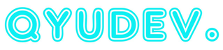

<!DOCTYPE html>
<html lang="pt-BR">
<head>
<meta charset="utf-8">
<meta name="viewport" content="width=device-width, initial-scale=1, viewport-fit=cover">
<meta name="theme-color" content="#f26a1b">
<meta name="apple-mobile-web-app-capable" content="yes">
<meta name="apple-mobile-web-app-status-bar-style" content="black-translucent">
<meta name="apple-mobile-web-app-title" content="Estudos">
<meta name="description" content="Cronograma de estudos para concursos: o que estudar em cada dia, checklist do edital e contagem até a prova.">
<meta property="og:type" content="website">
<meta property="og:site_name" content="Meu Cronograma de Estudo">
<meta property="og:title" content="Meu Cronograma de Estudo">
<meta property="og:description" content="Plano diário, checklist do edital e contagem até a prova. Instale na tela inicial do celular.">
<meta property="og:url" content="https://jacobbv.github.io/meu-cronograma-estudo/">
<meta property="og:image" content="https://jacobbv.github.io/meu-cronograma-estudo/og-image.png">
<meta property="og:image:width" content="1200">
<meta property="og:image:height" content="630">
<meta property="og:locale" content="pt_BR">
<meta name="twitter:card" content="summary_large_image">
<link rel="icon" type="image/png" sizes="32x32" href="favicon-32.png">
<link rel="icon" type="image/png" sizes="192x192" href="icon-192.png">
<link rel="manifest" href="manifest.webmanifest">
<link rel="apple-touch-icon" href="icon-180.png">
<title>Meu Cronograma de Estudo</title>
<link rel="preconnect" href="https://fonts.googleapis.com">
<link href="https://fonts.googleapis.com/css2?family=Barlow:wght@400;500;600;700&family=Barlow+Condensed:wght@600;700&display=swap" rel="stylesheet">
<style>
/* VOICE: calmo, encorajador, direto — caderneta de campo de recenseador
   IDEA: a prancheta do recenseador: folha de coleta com itens a marcar
   PICTURE: cabeçalho verde com curvas de nível + contagem regressiva grande
   COLOUR and TYPE: verde-campo dominante, branco, amarelo-sol de destaque; Barlow / Barlow Condensed
   LAYOUT: app de celular, uma coluna, barra de abas embaixo */
:root{color-scheme:light dark;
--bg:light-dark(#f3f3f4,#0d0d0e);--card:light-dark(#ffffff,#18181a);--ink:light-dark(#18181b,#ececee);
--mut:light-dark(#62626a,#9d9da6);--line:light-dark(#e4e4e7,#2a2a2e);
--g:#f26a1b;--g2:light-dark(color-mix(in srgb,var(--g) 11%,#fff),color-mix(in srgb,var(--g) 22%,#18181a));--sun:var(--g);--rest:light-dark(#ececef,#26262a);
--pt:#2f6fd0;--mt:#d9622b;--ct:#1d8a52;--qs:#6b4fbf;--rv:#8a7a3a;--fx:#c0392b}
:root[data-theme=light]{color-scheme:light}:root[data-theme=dark]{color-scheme:dark}
*{box-sizing:border-box;min-width:0}
html,body{margin:0}
body{background:var(--bg);color:var(--ink);font:16px/1.5 Barlow,system-ui,sans-serif;overflow-x:clip;-webkit-tap-highlight-color:transparent}
h1,h2,h3{font-family:"Barlow Condensed",Barlow,sans-serif;line-height:1.05;margin:0;text-wrap:balance}
button,input,select,textarea{font:inherit;color:inherit}
button{cursor:pointer}
:focus-visible{outline:3px solid var(--sun);outline-offset:2px}
.wrap{max-width:720px;margin:0 auto;padding:0 16px}
.top{background:var(--g);color:#fff;position:relative;overflow:hidden;padding:calc(env(safe-area-inset-top) + 18px) 0 22px}
.top svg.topo{position:absolute;inset:0;width:100%;height:100%;opacity:.18;pointer-events:none}
.top .wrap{position:relative}
.top small{display:block;opacity:.85;font-size:14px}
.top h1{font-size:clamp(32px,8vw,46px);margin-top:4px}
.back{background:none;border:0;color:#fff;opacity:.9;padding:8px 0;min-height:44px;font-weight:600}
.count{display:flex;align-items:flex-end;gap:14px;margin-top:14px;flex-wrap:wrap}
.count b{font:700 clamp(54px,16vw,84px)/.9 "Barlow Condensed",sans-serif;color:var(--sun)}
.count span{font-size:15px;opacity:.95;padding-bottom:6px}
.bar{height:10px;background:rgba(255,255,255,.22);border-radius:6px;overflow:hidden;margin-top:14px;display:flex}
.bar i{display:block;height:100%;transition:width .4s}
main{padding:18px 0 calc(96px + env(safe-area-inset-bottom))}
.card{background:var(--card);border:1px solid var(--line);border-radius:14px;padding:16px;margin-bottom:14px}
.card h2{font-size:24px;margin-bottom:10px}
.muted{color:var(--mut);font-size:14px}
.btn{display:inline-flex;align-items:center;justify-content:center;gap:8px;min-height:44px;padding:0 18px;border-radius:10px;border:0;background:var(--g);color:#fff;font-weight:600}
.btn.alt{background:var(--g2);color:var(--ink)}
.btn.sm{min-height:38px;padding:0 12px;font-size:14px}
.row{display:flex;gap:10px;flex-wrap:wrap;align-items:center}
.pick{display:block;width:100%;text-align:left;background:var(--card);border:1px solid var(--line);border-radius:14px;padding:18px;margin-bottom:12px;min-height:44px}
.pick .av{display:inline-grid;place-items:center;width:52px;height:52px;border-radius:50%;background:var(--g);color:#fff;font:700 26px "Barlow Condensed";margin-right:14px;vertical-align:middle}
.pick .av img,.top .foto img{width:100%;height:100%;object-fit:cover;border-radius:50%;display:block}
.pick .av{overflow:hidden}
.foto{display:inline-grid;place-items:center;width:64px;height:64px;border-radius:50%;background:rgba(255,255,255,.15);border:2px solid var(--sun);color:var(--sun);font:700 30px "Barlow Condensed";overflow:hidden;padding:0;cursor:pointer;flex:none}
.who{display:flex;align-items:center;gap:14px;margin-top:4px}
.fotobtn{margin-right:14px;background:none;border:0;color:#fff;opacity:.85;font-size:14px;font-weight:600;text-decoration:underline;padding:6px 0;min-height:32px}
.pick strong{font-size:22px;font-family:"Barlow Condensed";vertical-align:middle}
.conc h3{font-size:26px}
.conc .meta{margin:4px 0 12px}
.mini{height:8px;background:var(--g2);border-radius:5px;overflow:hidden;display:flex}
.mini i{display:block;height:100%;background:var(--c,var(--g))}
.task{display:flex;gap:12px;align-items:flex-start;padding:12px 0;border-top:1px solid var(--line)}
.task:first-of-type{border-top:0}
.chk{flex:none;width:30px;height:30px;border-radius:8px;border:2px solid var(--mut);background:transparent;display:grid;place-items:center;margin-top:1px;padding:0}
.chk svg{width:18px;height:18px;opacity:0}
.task.ok .chk{background:var(--g);border-color:var(--g)}
.task.ok .chk svg{opacity:1}
.task.ok .tt{text-decoration:line-through;color:var(--mut)}
.tag{display:inline-block;font-size:12px;font-weight:700;color:var(--c);background:color-mix(in srgb,var(--c) 15%,transparent);border-radius:6px;padding:2px 8px;margin:0 4px 3px 0}
.tag.late{background:transparent;color:var(--fx);border:1px solid var(--fx)}
.tt{display:block;font-weight:500}
.hint{display:block;font-size:13px;color:var(--mut);margin-top:2px}
.day{margin-bottom:12px}
.day h3{font-size:20px;display:flex;justify-content:space-between;gap:8px}
.day.hoje{border-color:var(--g);box-shadow:0 0 0 2px var(--g) inset}
.day.off{opacity:.6}
.wk{display:flex;justify-content:space-between;align-items:center;gap:8px;margin-bottom:12px}
.wk h2{font-size:22px;margin:0;text-align:center}
.seg{display:grid;grid-template-columns:1fr 1fr;background:var(--g2);border-radius:12px;padding:4px;margin-bottom:14px}
.seg button{min-height:40px;border:0;border-radius:9px;background:transparent;font-weight:700;color:var(--mut)}
.seg button[aria-pressed=true]{background:var(--card);color:var(--ink);box-shadow:0 1px 3px rgba(0,0,0,.12)}
.cal{display:grid;grid-template-columns:repeat(7,minmax(0,1fr));gap:4px}
.cal .h{font-size:12px;font-weight:700;color:var(--mut);text-align:center;padding:4px 0}
.cal button{aspect-ratio:1/1.05;border:1px solid var(--line);background:var(--card);border-radius:10px;padding:4px 2px;display:flex;flex-direction:column;align-items:center;justify-content:space-between;font-weight:700;font-size:15px}
.cal button.fora{visibility:hidden}
.cal button.hoje{border:2px solid var(--g)}
.cal button.sel{background:var(--g);color:#fff;border-color:var(--g)}
.cal button.prova{background:var(--fx);color:#fff;border-color:var(--fx)}
.cal button.feito .n::after{content:"✓";font-size:11px;margin-left:2px;color:var(--ct)}
.cal button.sel.feito .n::after{color:#fff}
.dots{display:flex;gap:3px;flex-wrap:wrap;justify-content:center;min-height:8px}
.dots i{width:7px;height:7px;border-radius:50%;background:var(--c)}
.dots i.ok{opacity:.35}
.leg{display:flex;flex-wrap:wrap;gap:6px 14px;margin-top:12px;font-size:13px;color:var(--mut)}
.leg span::before{content:"";display:inline-block;width:9px;height:9px;border-radius:50%;background:var(--c);margin-right:5px}
.donut{display:grid;grid-template-columns:150px minmax(0,1fr);gap:18px;align-items:center}
.donut .fig{position:relative;width:150px;height:150px}
.donut svg{width:150px;height:150px;transform:rotate(-90deg)}
.donut .c{position:absolute;inset:0;display:grid;place-content:center;text-align:center}
.donut .c b{font:700 38px/1 "Barlow Condensed"}
.donut .c span{font-size:13px;color:var(--mut)}
.lg{display:grid;gap:10px}
.lg div{font-size:14px}
.lg b{display:flex;justify-content:space-between;gap:8px;font-weight:600}
@media(max-width:420px){.donut{grid-template-columns:1fr;justify-items:center}.lg{width:100%}}
.subj h3{font-size:22px;display:flex;justify-content:space-between;gap:8px;margin-bottom:6px}
dl{display:grid;grid-template-columns:auto minmax(0,1fr);gap:8px 14px;margin:0}
dt{color:var(--mut);font-size:14px;padding-top:2px}dd{margin:0;font-weight:600}
.dist{display:grid;gap:8px;margin-top:6px}
.dist div{display:grid;grid-template-columns:9.5em minmax(0,1fr) 2.5em;gap:10px;align-items:center;font-size:14px}
.dist i{display:block;height:14px;border-radius:4px;background:var(--c)}
.dist b{text-align:right}
.tl{list-style:none;margin:0;padding:0}
.tl li{display:grid;grid-template-columns:5.2em minmax(0,1fr);gap:10px;padding:8px 0;border-top:1px solid var(--line);font-size:15px}
.tl li:first-child{border-top:0}
.tl li b{white-space:nowrap}
.tl li.past{color:var(--mut)}
.tl li.big b,.tl li.big span{color:var(--fx);font-weight:700}
ul.dots-list{margin:0;padding-left:20px}
ul.dots-list li{margin:4px 0}
.chips{display:flex;gap:8px;flex-wrap:wrap}
.chip{min-width:52px;min-height:44px;border-radius:10px;border:2px solid var(--line);background:var(--card);font-weight:700}
.chip[aria-pressed=true]{background:var(--g);border-color:var(--g);color:#fff}
label.f{display:block;margin-bottom:12px;font-size:14px;color:var(--mut)}
label.f input,label.f textarea{display:block;width:100%;margin-top:4px;font-size:16px;padding:10px 12px;border-radius:10px;border:1px solid var(--line);background:var(--bg);color:var(--ink)}
.two{display:grid;grid-template-columns:minmax(0,1fr) minmax(0,1fr);gap:10px}
textarea{min-height:90px}
.pausa{display:flex;justify-content:space-between;align-items:center;gap:10px;padding:8px 0;border-top:1px solid var(--line)}
.tabs{position:fixed;left:0;right:0;bottom:0;background:var(--card);border-top:1px solid var(--line);padding-bottom:env(safe-area-inset-bottom);z-index:5}
.tabs .wrap{display:grid}
.tabs button{background:none;border:0;min-height:58px;font-size:13px;font-weight:600;color:var(--mut);display:flex;flex-direction:column;align-items:center;justify-content:center;gap:3px}
.tabs button svg{width:22px;height:22px}
.tabs button[aria-current=true]{color:var(--g)}

.alert{background:light-dark(#fff6d6,#3a3012);border:1px solid light-dark(#f0d77a,#6b5a1f);border-radius:12px;padding:12px 14px;margin-bottom:14px;font-size:15px}
.toast{position:fixed;left:50%;bottom:calc(80px + env(safe-area-inset-bottom));transform:translateX(-50%);background:var(--ink);color:var(--bg);padding:10px 16px;border-radius:10px;font-weight:600;opacity:0;transition:opacity .2s;pointer-events:none;z-index:9}
.toast.on{opacity:1}
a{color:inherit}
.foot{text-align:center;font-size:12px;color:var(--mut);margin-top:8px}
@media (prefers-reduced-motion:reduce){*{transition:none!important}}
.wrap.wide{max-width:1000px}
.grp{display:flex;align-items:center;gap:8px;font-size:13px;font-weight:700;color:var(--mut);margin:14px 0 2px}
.grp:first-of-type{margin-top:4px}
.grp svg{width:18px;height:18px;flex:none}
.sub{display:block;font-size:13px;color:var(--mut);margin-top:2px}
.mini-btn{display:inline-flex;align-items:center;min-height:34px;padding:0 10px;margin-top:6px;margin-right:6px;border-radius:8px;border:1px solid var(--line);background:var(--bg);font-size:13px;font-weight:600;color:var(--ink)}
.mini-btn.ok{border-color:var(--ct);color:var(--ct)}
.plf{display:flex;gap:8px;align-items:center;flex-wrap:wrap;margin-top:8px;font-size:14px}
.plf input{width:64px;font-size:16px;padding:6px 8px;border-radius:8px;border:1px solid var(--line);background:var(--bg);color:var(--ink)}
.fire{display:flex;align-items:center;gap:14px}
.fire svg{width:46px;height:46px;flex:none}
.fire b{font:700 34px/1 "Barlow Condensed"}
.fire .muted{display:block;margin-top:2px}
.prev{display:flex;gap:10px;align-items:flex-start;font-size:15px}
.prev svg{width:22px;height:22px;flex:none;margin-top:1px}
.adi{width:100%;margin-top:6px;flex-direction:column;gap:0;padding:8px 18px;min-height:52px}
.adi small{font-weight:500;opacity:.85;font-size:13px}
.stepper{display:grid;grid-template-columns:4.5em 44px 2.2em 44px minmax(0,1fr);align-items:center;gap:8px;padding:6px 0;border-top:1px solid var(--line)}
.stepper:first-of-type{border-top:0}
.stepper b{text-align:center;font:700 20px "Barlow Condensed"}
.stepper button{min-height:40px;border-radius:10px;border:1px solid var(--line);background:var(--bg);font-weight:700;font-size:20px}
.stepper span.muted{font-size:13px}
.pdfbar{display:flex;align-items:center;justify-content:space-between;gap:8px;flex-wrap:wrap;margin-bottom:10px}
.pdfbar .pg{font-weight:700;font-size:16px}
.pdfwrap{overflow:auto;border-radius:10px;background:var(--rest);min-height:300px;display:flex;justify-content:center;align-items:flex-start;touch-action:pan-y pinch-zoom}
.pdfwrap canvas{display:block;background:#fff;max-width:none}
.toc{display:grid;gap:2px;margin-top:8px}
.toc button{display:flex;justify-content:space-between;gap:10px;text-align:left;background:none;border:0;border-top:1px solid var(--line);padding:10px 2px;min-height:44px;font-size:15px}
.toc button.here{color:var(--ct);font-weight:700}
details summary{cursor:pointer;font-weight:700;min-height:32px}
.segt{display:grid;grid-template-columns:repeat(3,minmax(0,1fr));background:var(--g2);border-radius:12px;padding:4px}
.segt button{min-height:40px;border:0;border-radius:9px;background:transparent;font-weight:700;color:var(--mut)}
.segt button[aria-pressed=true]{background:var(--card);color:var(--ink);box-shadow:0 1px 3px rgba(0,0,0,.12)}
.perf div{display:grid;grid-template-columns:8em minmax(0,1fr) 3.2em;gap:10px;align-items:center;font-size:14px;margin-top:8px}
.perf i{display:block;height:12px;border-radius:4px;background:var(--c)}
.perf .track{background:var(--rest);border-radius:4px;overflow:hidden}
.perf b{text-align:right}
.pinbox{max-width:320px;margin:0 auto;text-align:center}
.pinbox input{font-size:28px;letter-spacing:.5em;text-align:center;width:100%;padding:12px;border-radius:12px;border:1px solid var(--line);background:var(--bg);color:var(--ink)}
.err{color:var(--fx);font-size:14px;min-height:20px;margin-top:6px}

.toprow{display:flex;justify-content:space-between;align-items:center;gap:8px}
.acts{display:flex;align-items:center;gap:8px}
.chipf{display:inline-flex;align-items:center;gap:4px;min-height:40px;padding:0 12px 0 8px;border-radius:20px;border:1px solid rgba(255,255,255,.35);background:rgba(255,255,255,.1);color:#fff;font-weight:700;font-size:15px}
.chipf svg{width:24px;height:24px}
.chipf.on{background:rgba(244,196,48,.18);border-color:var(--sun)}
.sino{position:relative;width:42px;height:42px;border-radius:50%;border:1px solid rgba(255,255,255,.35);background:rgba(255,255,255,.1);color:#fff;display:grid;place-items:center;padding:0}
.sino svg{width:22px;height:22px}
.sino i{position:absolute;top:-4px;right:-4px;min-width:20px;height:20px;border-radius:10px;background:var(--fx);color:#fff;font:700 12px/20px Barlow;font-style:normal;padding:0 5px}
.avp{width:42px;height:42px;border-radius:50%;border:2px solid var(--sun);background:rgba(255,255,255,.12);color:var(--sun);font:700 20px "Barlow Condensed";padding:0;overflow:hidden;display:grid;place-items:center}
.avp img{width:100%;height:100%;object-fit:cover}
@media(max-width:400px){.toprow .back{font-size:14px}.chipf span{font-size:14px}}
.painel{border:2px solid var(--g)}
.ph{display:flex;justify-content:space-between;align-items:center;gap:10px}
.ph h2{margin:0 0 8px}
.x{flex:none;width:36px;height:36px;border-radius:50%;border:0;background:transparent;color:inherit;font-size:24px;line-height:1;padding:0;opacity:.7}
.fgrid{display:grid;grid-template-columns:repeat(7,minmax(0,1fr));gap:6px;text-align:center}
.fgrid .h{font-size:12px;font-weight:700;color:var(--mut)}
.fd{aspect-ratio:1;border-radius:10px;display:grid;place-items:center;font-size:13px;font-weight:600;border:1px solid var(--line)}
.fd svg{width:70%;height:70%}
.fd.est{background:light-dark(#fff1e0,#3a2612);border-color:#f08a24}
.fd.folga{background:var(--rest);color:var(--mut);border-style:dashed}
.fd.perdeu{color:var(--fx);border-color:light-dark(#f2c2bc,#5a2a24)}
.fd.fut{color:var(--mut);opacity:.6}
.fd.hj{box-shadow:0 0 0 2px var(--g)}
.big{font:700 26px "Barlow Condensed"}
.av-it{padding:10px 0 10px 12px;border-top:1px solid var(--line);font-size:15px;border-left:3px solid transparent}
.av-it.novo{border-left-color:var(--fx)}
.alert.av{display:flex;justify-content:space-between;align-items:flex-start;gap:8px;padding-right:6px}
.alert.av .x{width:32px;height:32px;margin-top:-4px}
#apSair{display:none}
.leitor.cheia{position:fixed;inset:0;z-index:20;margin:0;border-radius:0;display:flex;flex-direction:column;padding:calc(env(safe-area-inset-top) + 8px) 10px calc(env(safe-area-inset-bottom) + 8px)}
.leitor.cheia .pdfwrap{flex:1;min-height:0;align-items:center}
.leitor.cheia > p{display:none}
.leitor.cheia #apSair{display:inline-flex}
.leitor.cheia #apTela{display:none}
body.travado{overflow:hidden}

.top{background:var(--card);color:var(--ink);border-bottom:1px solid var(--line)}
.top svg.topo{display:none}
.top small{opacity:1;color:var(--mut)}
.top h1{color:var(--ink)}
.back{color:var(--ink);opacity:1}
.count b{color:var(--g)}
.bar{background:var(--rest)}
.chipf{border-color:var(--line);background:var(--bg);color:var(--ink)}
.chipf.on{background:var(--g2);border-color:var(--g);color:var(--g)}
.sino{border-color:var(--line);background:var(--bg);color:var(--ink)}
.avp{border-color:var(--g);background:var(--g2);color:var(--g)}
.foto{background:var(--g2);border-color:var(--g);color:var(--g)}
.fotobtn{color:var(--ink)}
.tabs button[aria-current=true]{color:var(--g)}
.ico{display:inline-grid;place-items:center;width:34px;height:34px;border-radius:10px;background:color-mix(in srgb,var(--c) 15%,transparent);color:var(--c);flex:none}
.ico svg{width:19px;height:19px}
.menu{display:grid;gap:2px}
.menu button,.menu .it{display:flex;align-items:center;gap:12px;width:100%;min-height:48px;padding:6px 4px;background:none;border:0;border-top:1px solid var(--line);text-align:left;font-size:16px;font-weight:500;color:var(--ink)}
.menu .lbl{font-size:12px;font-weight:700;color:var(--mut);margin:12px 0 2px;letter-spacing:.02em}
.sw{margin-left:auto;width:46px;height:28px;border-radius:14px;background:var(--rest);position:relative;flex:none;transition:background .2s}
.sw::after{content:"";position:absolute;top:3px;left:3px;width:22px;height:22px;border-radius:50%;background:#fff;box-shadow:0 1px 3px rgba(0,0,0,.25);transition:left .2s}
.sw.on{background:var(--g)}.sw.on::after{left:21px}
.perfhd{display:flex;align-items:center;gap:14px;padding:4px 0 12px;background:var(--g2);margin:-16px -16px 8px;padding:16px;border-radius:12px 12px 0 0}
.perfhd .avp{width:56px;height:56px;font-size:26px}
.selo{display:inline-block;font-size:12px;font-weight:700;color:#fff;background:var(--g);border-radius:20px;padding:1px 10px;margin-bottom:3px}

.pop-bg{position:fixed;inset:0;z-index:29;background:rgba(0,0,0,.18)}
.pop{position:fixed;z-index:30;top:calc(env(safe-area-inset-top) + 62px);right:max(10px,calc((100vw - 720px)/2 + 10px));width:min(370px,calc(100vw - 20px));max-height:calc(100dvh - 150px);overflow:auto;border-radius:16px;box-shadow:0 18px 50px rgba(0,0,0,.28),0 2px 8px rgba(0,0,0,.12);animation:popin .16s ease-out}
.pop .painel{margin:0;border:1px solid var(--line)}
@keyframes popin{from{opacity:0;transform:translateY(-6px)}to{opacity:1;transform:none}}
.pop .fgrid{gap:4px}
.pop .fd{font-size:12px;border-radius:8px;max-height:40px;aspect-ratio:auto;height:38px}
.pop .big{font-size:22px}
.pop h2{font-size:21px}
.pop .menu button,.pop .menu .it{min-height:44px;font-size:15px}
.cores{display:flex;gap:6px;margin-left:auto;flex-wrap:wrap;justify-content:flex-end}
.cor{width:26px;height:26px;border-radius:50%;background:var(--c);border:2px solid var(--card);box-shadow:0 0 0 1px var(--line);padding:0;min-height:0!important;flex:none}
.cor.on{box-shadow:0 0 0 2px var(--c)}
@media (prefers-reduced-motion:reduce){.pop{animation:none}}
.menu .cores .cor,.pop .menu .cores .cor{display:block;width:28px;height:28px;min-height:0;padding:0;border:2px solid var(--card);border-radius:50%;background:var(--c)}

.pop.drawer{top:0;right:0;bottom:0;width:min(400px,100vw);max-height:none;height:100dvh;border-radius:0;animation:dr .2s ease-out;box-shadow:-10px 0 40px rgba(0,0,0,.25)}
.pop.drawer .painel{min-height:100%;border:0;border-radius:0;padding-top:0}
.dh{display:flex;justify-content:space-between;align-items:center;background:var(--g);color:#fff;margin:0 -16px 8px;padding:calc(env(safe-area-inset-top) + 14px) 16px 14px}
.dh h2{margin:0;color:#fff}.dh .x{color:#fff;opacity:1}
@keyframes dr{from{transform:translateX(100%)}to{transform:none}}
@media (prefers-reduced-motion:reduce){.pop.drawer{animation:none}}

.hero{background:var(--card);border-bottom:1px solid var(--line);padding:calc(env(safe-area-inset-top) + 18px) 0 18px;overflow:hidden}
.heroin{display:grid;grid-template-columns:minmax(0,1fr) minmax(0,300px);gap:16px;align-items:center}
.hero h1{font-size:clamp(40px,9vw,58px);color:var(--ink);margin:8px 0 8px}
.hero p{margin:0 0 12px;color:var(--mut);max-width:34ch}
.falta{display:inline-block;background:var(--g2);color:var(--g);border-radius:20px;padding:4px 12px;font-weight:600;font-size:14px}
.falta b{font-size:16px}
.ilu{width:100%;height:auto;max-height:230px}
@media(max-width:560px){.heroin{grid-template-columns:1fr}.ilu{max-width:300px;justify-self:center;order:-1;margin-bottom:-6px}}
.qv{font-size:24px;margin:20px 0 12px}
.pk{display:flex;align-items:center;gap:0}
.pk .pkn{display:flex;flex-direction:column;flex:1;line-height:1.2}
.pk .pkn .muted{display:inline-flex;align-items:center;gap:4px;margin-top:4px}
.pk .pkn .muted svg{width:14px;height:14px}
.pk .seta{font-size:30px;color:var(--mut);line-height:1}
.rod{display:flex;flex-direction:column;align-items:center;gap:6px;margin-top:24px;font-size:12px;color:var(--mut)}
.assina{display:inline-flex;align-items:center;gap:8px;text-decoration:none;color:var(--mut);font-size:13px}
.assina img{height:30px;width:auto;border-radius:6px;background:#fff;padding:3px 6px}
.big2{display:inline-grid;place-items:center;width:72px;height:72px;border-radius:50%;background:var(--g);color:#fff;font:700 34px "Barlow Condensed";overflow:hidden;margin:0 auto 10px}
.big2 img{width:100%;height:100%;object-fit:cover}
</style>
</head>
<body>
<div id="app"></div>
<div class="toast" id="toast" role="status"></div>
<script>
{
const VERSAO = '3.4.0';
/* ---------- Dados do concurso (Edital IBGE nº 03/2026 + apostila do 12º Censo Agro) ---------- */
const IBGE = {
  id:'ibge2027', nome:'IBGE 2027', cargo:'Recenseador (REC)', banca:'Fundação Cesgranrio',
  data:'2027-01-31', hora:'13h às 17h (horário de Brasília)', nivel:'Fundamental',
  area:'Catolé do Rocha (Catolé do Rocha)/PB', local:'Catolé do Rocha/PB',
  extra:'12º Censo Agropecuário, Florestal e Aquícola',
  prova:[['Conhecimentos Técnicos',30,'ct'],['Língua Portuguesa',15,'pt'],['Matemática',15,'mt']],
  inicio:'2026-11-23', fimConteudo:'2027-01-24',
  feriados:['2026-12-24','2026-12-25','2026-12-31','2027-01-01'],
  datas:[['2026-11-25','Fim das inscrições (23h59)'],['2026-11-27','Último dia para pagar a taxa de R$ 70,00'],
    ['2026-12-14','Lista preliminar de inscrições deferidas'],['2027-01-05','Lista definitiva de inscrições'],
    ['2027-01-26','Sai o Cartão de Confirmação de Inscrição (CCI) com o local da prova'],['2027-01-31','Prova objetiva, 13h às 17h',1],
    ['2027-02-01','Gabarito preliminar'],['2027-03-05','Resultado preliminar'],['2027-04-30','Resultado final']]
};
/* tipos de assunto: aq = videoaula + questões · a = videoaula · q = questões · lq = leitura + questões · l = leitura */
const MAT = {
  pt:{nome:'Português', cor:'var(--pt)', itens:[
    ['Ortografia oficial','Gran: aulas 1 a 4 — Ortografia e Acentuação','aq'],
    ['Acentuação gráfica','Gran: aulas 1 a 4 — Ortografia e Acentuação','aq'],
    ['Classes de palavras I: substantivo, adjetivo, artigo e numeral','Gran: aulas de Morfologia (a partir da aula 10)','aq'],
    ['Classes de palavras II: advérbio, preposição, conjunção e interjeição','Gran: aulas de Morfologia; Cesgranrio na prática, aulas 13 e 14','aq'],
    ['Emprego dos verbos regulares e irregulares','Gran: aulas de Morfologia (verbo)','aq'],
    ['Vozes dos verbos (ativa, passiva e reflexiva)','Gran: Cesgranrio na prática, aula 17 — Vozes Verbais','aq'],
    ['Emprego dos pronomes: pessoais, de tratamento, possessivos e demonstrativos','Gran: aulas de Morfologia (pronomes)','aq'],
    ['Pronomes relativos e colocação pronominal','Gran: Cesgranrio na prática, aulas 12, 15 e 16','aq'],
    ['Base: termos da oração e predicação verbal','Gran: Sintaxe, Predicação Verbal (até a aula 22) e Termos Ligados ao Nome (23 a 25)','aq'],
    ['Base: período composto, orações substantivas e adjetivas','Gran: aulas 27 a 36','aq'],
    ['Concordância verbal','Gran: Cesgranrio na prática, aulas 18 e 19 — Concordância','aq'],
    ['Concordância nominal','Gran: Cesgranrio na prática, aulas 18 e 19 — Concordância','aq'],
    ['Regência verbal','Gran: aulas de Regência','aq'],
    ['Regência nominal','Gran: aulas de Regência','aq'],
    ['Pontuação: uso da vírgula','Gran: aulas de Pontuação','aq'],
    ['Pontuação: demais sinais; estrutura e sequência lógica de frases e parágrafos','Gran: aulas de Pontuação','aq'],
    ['Significação das palavras: sinônimos, antônimos e homônimos','Gran: aulas de Semântica','aq'],
    ['Compreensão de texto','Gran: Cesgranrio na prática, aulas 20 a 22 — Interpretação de Texto','aq']],
    rev:['Questões de ortografia e acentuação','Flashcards: regras de acentuação e ortografia','Questões de classes de palavras e pronomes',
      'Questões de concordância','Questões de regência','Releitura dos resumos: verbos e vozes verbais','Questões de pontuação',
      'Questões de interpretação de texto (provas Cesgranrio)']},
  mt:{nome:'Matemática', cor:'var(--mt)', itens:[
    ['Números naturais: operações e propriedades','Gran: aulas 1 a 9 — Introdução à Matemática Básica','aq'],
    ['Números inteiros e racionais: operações e propriedades','Gran: aulas 1 a 9 — Introdução à Matemática Básica','aq'],
    ['Frações e números decimais','Gran: Introdução à Matemática Básica','aq'],
    ['Múltiplos e divisores (MMC e MDC)','Gran: aulas 10 e 11 — MDC e MMC','aq'],
    ['Problemas com naturais, inteiros e racionais','Gran: caderno de questões','q'],
    ['Equações do 1º grau','Gran: aula 12 — Equação do 1º grau','aq'],
    ['Problemas com equações do 1º grau','Gran: aulas 14 a 17 — Sistemas (ajudam nos problemas)','aq'],
    ['Razão e proporção','Gran: aula 19 — Razão e proporção','aq'],
    ['Divisão proporcional','Gran: aula 20 — Divisão proporcional','aq'],
    ['Regra de três simples','Gran: aulas de Regra de três','aq'],
    ['Porcentagem I: conceito e cálculo','Gran: aulas de Porcentagem','aq'],
    ['Porcentagem II: aumentos, descontos e problemas','Gran: aulas de Porcentagem','aq'],
    ['Medidas de comprimento e superfície; conversões','Gran: aulas 52 a 55 — Sistemas de Unidades de Medidas','aq'],
    ['Medidas de volume, massa e tempo; sistema métrico decimal','Gran: aulas 52 a 55 — Sistemas de Unidades de Medidas','aq'],
    ['Áreas e perímetros','Gran: aulas de Geometria Plana','aq'],
    ['Volumes','Gran: aulas 56 a 63 — Geometria Espacial','aq'],
    ['Tabelas, gráficos e quadros informativos','Gran: aulas de Tabelas e Gráficos','aq'],
    ['Mapas, croquis, esquemas e representações gráficas','Gran: Conhecimentos Técnicos, aulas 1 a 3 (Cartografia) ajudam aqui','aq']],
    rev:['Questões de porcentagem e regra de três','Questões de razão, proporção e divisão proporcional','Flashcards: conversão de medidas',
      'Questões de áreas, perímetros e volumes','Questões de equações do 1º grau','Questões de tabelas e gráficos','Questões de operações, MMC e MDC']},
  ct:{nome:'Conhecimentos Técnicos', cor:'var(--ct)', itens:[
    ['Gran aula 1: Introdução aos Conceitos Básicos de Cartografia e Interpretação de Mapas','Videoaula','a'],
    ['Gran aula 2: Conceitos Básicos de Cartografia e Interpretação de Mapas II','Videoaula','a'],
    ['Gran aula 3: Conceitos Básicos de Cartografia e Interpretação de Mapas III','Videoaula','a'],
    ['Apresentação, o IBGE e o Censo Agropecuário, Florestal e Aquícola','Apostila','lq',3,7],
    ['O 12º Censo Agropecuário, Florestal e Aquícola','Apostila','lq',8,10],
    ['Gran aula 4: Estudo dos conhecimentos técnicos do 12º Censo (parte 1)','Videoaula','a'],
    ['Estrutura Organizacional Censitária','Apostila — funções do ACR, ACS e Recenseador','lq',11,19],
    ['Instrumentos de trabalho','Apostila','lq',20,22],
    ['Gran aula 5: Estudo dos conhecimentos técnicos do 12º Censo (parte 2)','Videoaula','a'],
    ['Orientações de navegação para o trabalho em campo','Apostila','lq',23,31],
    ['Divisão político-administrativa do Brasil','Apostila','lq',32,34],
    ['Gran aula 6: Estudo dos conhecimentos técnicos do 12º Censo (parte 3)','Videoaula','a'],
    ['Estruturas Territoriais e territórios de Povos e Comunidades Tradicionais (PCTs)','Apostila','lq',35,42],
    ['Endereço','Apostila','lq',43,47],
    ['Coordenadas Geográficas','Apostila','lq',48,50],
    ['Gran aula 7: Estudo dos conhecimentos técnicos do 12º Censo (parte 4)','Videoaula','a'],
    ['Estabelecimento Agropecuário','Apostila','lq',51,56],
    ['Produtores sem área','Apostila','lq',57,58],
    ['Situações especiais e Encerramento','Apostila','lq',59,68],
    ['Gran aula 8: Estudo dos conhecimentos técnicos do 12º Censo (parte 5)','Videoaula','a'],
    ['Resumo da apostila inteira: conceitos, siglas e definições','Monte flashcards com o que mais confunde','l'],
    ['Caderno de questões Gran: Conhecimentos Técnicos','Questões','q']],
    rev:['Flashcards: siglas e funções da estrutura censitária','Releitura dos trechos marcados da apostila','Questões de Conhecimentos Técnicos',
      'Releitura dos resumos: estabelecimento agropecuário, produtores sem área e situações especiais','Questões: endereço, coordenadas e estruturas territoriais']},
  qs:{nome:'Questões', cor:'var(--qs)', itens:[
    ['Gran: Resolução de prova Cesgranrio — CEF 2026 (partes I e II)','Português, aulas 1 e 2 do tópico de provas','a'],
    ['Gran: Resolução de prova Cesgranrio — BNDES 2024 (partes I e II)','Português, aulas 3 e 4 do tópico de provas','a'],
    ['Gran: Resolução de prova Cesgranrio — Banese 2025 (partes I e II)','Português, aulas 5 e 6 do tópico de provas','a'],
    ['Gran: Cesgranrio na prática — pronome relativo e conjunções','Aulas 12 a 14','a'],
    ['Gran: Cesgranrio na prática — conjunções e colocação pronominal','Aulas 15 e 16','a'],
    ['Gran: Cesgranrio na prática — vozes verbais e concordância','Aulas 17 a 19','a'],
    ['Gran: Cesgranrio na prática — interpretação de texto','Aulas 20 a 22','a'],
    ['Caderno de questões: 30 questões de Português e Matemática','Gran','q'],
    ['Caderno de questões: 30 questões de Conhecimentos Técnicos','Gran','q']],
    rev:['Caderno de questões: 30 questões misturadas das três matérias','Refazer as questões que errou nas últimas semanas']}
};
const SUM = [['Apresentação',3],['O Instituto Brasileiro de Geografia e Estatística',4],['O Censo Agropecuário, Florestal e Aquícola',6],['O 12º Censo Agropecuário, Florestal e Aquícola',8],
  ['Estrutura Organizacional Censitária',11],['Instrumentos de trabalho',20],['Orientações de navegação para o trabalho em campo',23],['Divisão político-administrativa do Brasil',32],
  ['Estruturas Territoriais',35],['Estruturas territoriais de Povos e Comunidades Tradicionais (PCTs)',39],['Endereço',43],['Coordenadas Geográficas',48],
  ['Estabelecimento Agropecuário',51],['Produtores sem área',57],['Situações especiais',59],['Encerramento',67]];
const AP_PAGS = 68;
const STEPS = {aq:['a','q'], a:['a'], q:['q'], lq:['l','q'], l:['l'], x:['f']};
const STEPNOME = {a:'Videoaula', q:'Questões', l:'Leitura', f:'Tarefa'};
const ROT = ['ct','pt','ct','mt','pt','ct','mt','qs'];
const REVROT = ['ct','pt','mt','ct','qs','pt','mt'];
/* fila de conteúdo: matérias intercaladas, CT com mais peso (vale metade da prova) */
const QC = (() => {const ptr = {pt:0,mt:0,ct:0,qs:0}, out = []; let ok = true;
  while(ok){ok = false; for(const m of ROT){const it = MAT[m].itens[ptr[m]]; if(!it) continue; ok = true;
    out.push({id:m+'-'+ptr[m], m, t:it[0], g:it[1], k:it[2], pg:it[3] ? [it[3],it[4]] : null}); ptr[m]++}}
  return out})();
const QR = (() => {const rk = {pt:0,mt:0,ct:0,qs:0}, out = [];
  for(let i = 0; i < 220; i++){const m = REVROT[i % REVROT.length], k = rk[m]++, t = MAT[m].rev[k % MAT[m].rev.length];
    out.push({id:m+'-r'+k, m, t:'Revisão: '+t, k:/^(Flashcards|Releitura)/.test(t) ? 'l' : 'q', rev:1})}
  return out})();
const FT = {pt:['Revisão final de Português: concordância, regência, pontuação e pronomes + 20 questões','q'],
  mt:['Revisão final de Matemática: porcentagem, regra de três, medidas, áreas e volumes + 20 questões','q'],
  ct:['Revisão final de Conhecimentos Técnicos: resumos, flashcards e trechos marcados da apostila','lq']};
const FIXOS = [['2027-01-26','fx-cci','Baixar o Cartão de Confirmação (CCI) no site da Cesgranrio e ver o local e o horário do portão'],
  ['2027-01-28','fx-sim','Simulado completo: 60 questões em 4 horas (30 CT, 15 Português, 15 Matemática)'],
  ['2027-01-29','fx-cor','Corrigir o simulado e revisar os erros'],
  ['2027-01-30','fx-ves','Dia leve: revisão rápida e separar documento original com foto, comprovante de inscrição e caneta azul ou preta de corpo transparente']];
const TAGS = {pt:'Português',mt:'Matemática',ct:'Conh. Técnicos',qs:'Questões',rv:'Revisão',fx:'Reta final'};
const COR = m => MAT[m]?.cor || (m==='fx' ? 'var(--fx)' : 'var(--rv)');
const DIAS = ['Dom','Seg','Ter','Qua','Qui','Sex','Sáb'];
const DIASL = ['domingo','segunda','terça','quarta','quinta','sexta','sábado'];
const MESES = ['janeiro','fevereiro','março','abril','maio','junho','julho','agosto','setembro','outubro','novembro','dezembro'];
const SUBJ = ['ct','pt','mt'];
const EDITAL = QC.filter(a => a.m !== 'qs');

/* ---------- Estado ---------- */
const KEY = 'cronograma-estudos-v1';
const base = () => ({v:3, perfis:[], extras:{}, prog:{}, tema:'auto'});
let S; try{S = JSON.parse(localStorage.getItem(KEY)) || base()}catch(e){S = base()}
if(!S.tema) S.tema = 'auto';
const save = () => {try{localStorage.setItem(KEY, JSON.stringify(S))}catch(e){toast('Não deu para salvar neste aparelho')}};
let V = {view:'perfis', perfil:null, conc:null, tab:'hoje', semana:0, modo:'semana', mes:0, dia:null, pl:null, pinOk:null, apPag:null, pinEdit:false, painel:''};
try{const l = JSON.parse(sessionStorage.getItem(KEY+'-v')); if(l) V = {...V, ...l, pl:null, pinEdit:false, painel:''}}catch(e){}

const pad = n => String(n).padStart(2,'0');
const iso = d => d.getFullYear()+'-'+pad(d.getMonth()+1)+'-'+pad(d.getDate());
const parse = s => {const [y,m,d] = s.split('-').map(Number); return new Date(y,m-1,d)};
const hoje = () => iso(new Date());
const addD = (s,n) => {const d = parse(s); d.setDate(d.getDate()+n); return iso(d)};
const fmt = s => {const d = parse(s); return DIAS[d.getDay()]+', '+pad(d.getDate())+'/'+pad(d.getMonth()+1)};
const dm = s => s.slice(8)+'/'+s.slice(5,7);
const diasAte = s => Math.round((parse(s) - parse(hoje()))/864e5);
const esc = s => String(s).replace(/[&<>"']/g, c => ({'&':'&amp;','<':'&lt;','>':'&gt;','"':'&quot;',"'":'&#39;'}[c]));
const cap1 = s => s[0].toUpperCase()+s.slice(1);
const hashPin = (pin,id) => {let h = 5381; for(const c of id+'|'+pin) h = ((h<<5)+h+c.charCodeAt(0))|0; return (h>>>0).toString(36)};

function P(pid,cid){
  const k = pid+'|'+cid;
  if(!S.prog[k]) S.prog[k] = {done:{}, inicio:IBGE.inicio, feriados:true, pausas:[], extra:{}, placar:{}, perdao:[], recorde:0};
  const p = S.prog[k];
  p.pausas = p.pausas || []; p.extra = p.extra || {}; p.placar = p.placar || {}; p.perdao = p.perdao || []; p.recorde = p.recorde || 0;
  if(!p.ritmo){p.ritmo = {0:0,1:1,2:1,3:1,4:1,5:1,6:3}; if(p.dias) for(let w = 0; w < 7; w++) if(!p.dias.includes(w)) p.ritmo[w] = 0; delete p.dias}
  /* migração da v2: assunto marcado inteiro vira todas as etapas marcadas */
  if(cid === IBGE.id) for(const a of [...QC,...QR]) if(p.done[a.id] && typeof p.done[a.id] === 'string'){for(const s of STEPS[a.k]) p.done[a.id+':'+s] = p.done[a.id]; delete p.done[a.id]}
  return p;
}

/* ---------- Etapas e fila ---------- */
const sd = (p,a,s) => p.done[a.id+':'+s];
const aDone = (p,a) => {let mx = ''; for(const s of STEPS[a.k]){const d = sd(p,a,s); if(!d) return null; if(d > mx) mx = d} return mx};
const aPart = (p,a) => STEPS[a.k].filter(s => sd(p,a,s)).length;
const pausado = (p,d) => p.pausas.some(x => d >= x.de && d <= x.ate);
const capDia = (p,d) => {const ini = p.inicio || IBGE.inicio; if(d < ini || d > IBGE.fimConteudo || pausado(p,d) || (p.feriados && IBGE.feriados.includes(d))) return 0; return p.ritmo[parse(d).getDay()] || 0};
const motivoFolga = (p,d) => pausado(p,d) ? 'Pausa' : (p.feriados && IBGE.feriados.includes(d)) ? 'Feriado' : 'Folga';

function placarStats(p){
  const st = {pt:{a:0,t:0},mt:{a:0,t:0},ct:{a:0,t:0},mx:{a:0,t:0}};
  for(const r of Object.values(p.placar)){const k = st[r.m] ? r.m : 'mx'; st[k].a += r.a; st[k].t += r.t}
  return st;
}
const pctAc = x => x.t ? Math.round(100*x.a/x.t) : null;
function fracos(p){const st = placarStats(p); return [...SUBJ].sort((x,y) => {const a = st[x].t >= 5 ? st[x].a/st[x].t : .99, b = st[y].t >= 5 ? st[y].a/st[y].t : .99; return a - b || SUBJ.indexOf(x) - SUBJ.indexOf(y)})}
function finais(p){
  const ord = fracos(p), out = [];
  ord.forEach((m,i) => out.push([addD('2027-01-25',i), {id:'fx-'+m, m, t:FT[m][0], k:FT[m][1], fin:1}]));
  FIXOS.forEach(([d,id,t]) => out.push([d, {id, m:'fx', t, k:'x', fin:1}]));
  out.push([IBGE.data, {id:'prova', m:'fx', t:'DIA DA PROVA: 13h, Catolé do Rocha. Chegue cedo!', k:'x', fin:1}]);
  return out;
}

function plano(p){
  const h = hoje(), out = {}, add = (d,a) => (out[d] = out[d] || []).push(a);
  const pend = [];
  for(const a of [...QC,...QR]){const d = aDone(p,a); if(d) add(d,a); else pend.push(a)}
  let i = 0, fim = null, iHoje = 0;
  for(let d = h; d <= IBGE.fimConteudo && i < pend.length; d = addD(d,1)){
    let vagas = capDia(p,d) + (d === h ? (p.extra[h]||0) : 0) - (d === h ? (out[h]||[]).length : 0);
    while(vagas-- > 0 && i < pend.length){add(d,pend[i]); if(!pend[i].rev) fim = d; i++}
    if(d === h) iHoje = i;
  }
  const sobra = pend.slice(i).filter(a => !a.rev).length;
  if(!fim){const feitos = QC.map(a => aDone(p,a)).filter(Boolean).sort(); if(!pend.some(a => !a.rev)) fim = feitos[feitos.length-1] || null}
  for(const [d,a] of finais(p)) add(d,a);
  return {out, fim, sobra, prox:pend[iHoje] || null};
}

function sequencia(p,pl){
  const h = hoje(), ini = p.inicio || IBGE.inicio, act = new Set(Object.values(p.done));
  const conta = from => {let s = 0, d = from, miss = null;
    for(let g = 0; g < 500; g++){
      if(act.has(d)) s++;
      else if(d < ini) break;
      else if(capDia(p,d) > 0 && !p.perdao.includes(d)){miss = d; break}
      d = addD(d,-1);
    } return {s, miss}};
  const r = conta(act.has(h) ? h : addD(h,-1));
  const prev = r.miss ? conta(addD(r.miss,-1)).s : 0;
  const feitosHoje = (pl.out[h]||[]).filter(a => !a.fin && aDone(p,a) === h).length;
  const precisa = Math.max(1, capDia(p,h) + 1);
  return {s:r.s, hojeOk:act.has(h), miss:r.miss, prev, recuperavel: !!(r.miss && prev > 0 && r.miss >= addD(h,-3)), feitosHoje, precisa};
}

/* ---------- Componentes ---------- */
const ICK = '<svg viewBox="0 0 24 24" fill="none" stroke="#fff" stroke-width="3.2" stroke-linecap="round" stroke-linejoin="round"><path d="M5 12.5l4.5 4.5L19 7.5"/></svg>';
const IC = {
  casa:'<svg viewBox="0 0 24 24" fill="none" stroke="currentColor" stroke-width="2" stroke-linecap="round" stroke-linejoin="round"><path d="M3 11l9-7 9 7"/><path d="M5 10v10h14V10"/><path d="M10 20v-6h4v6"/></svg>',
  cel:'<svg viewBox="0 0 24 24" fill="none" stroke="currentColor" stroke-width="2" stroke-linecap="round" stroke-linejoin="round"><rect x="6" y="2.5" width="12" height="19" rx="2.5"/><path d="M11 18h2"/></svg>',
  task:'<svg viewBox="0 0 24 24" fill="none" stroke="currentColor" stroke-width="2" stroke-linecap="round" stroke-linejoin="round"><path d="M9 11l3 3 8-8"/><path d="M20 12v7a2 2 0 01-2 2H6a2 2 0 01-2-2V5a2 2 0 012-2h9"/></svg>',
  alvo:'<svg viewBox="0 0 24 24" fill="none" stroke="currentColor" stroke-width="2" stroke-linecap="round" stroke-linejoin="round"><circle cx="12" cy="12" r="9"/><circle cx="12" cy="12" r="5"/><circle cx="12" cy="12" r="1"/></svg>',
  aviso:'<svg viewBox="0 0 24 24" fill="none" stroke="var(--fx)" stroke-width="2" stroke-linecap="round" stroke-linejoin="round"><path d="M12 3l10 18H2z"/><path d="M12 10v5M12 18v.5"/></svg>'
};
const FOGO = on => `<svg viewBox="0 0 48 48" aria-hidden="true"><path d="M24 4c2 8 12 12 12 24a12 12 0 01-24 0c0-6 3-9 5-11 0 4 2 6 4 7-1-8 2-15 3-20z" fill="${on?'#f08a24':'none'}" stroke="${on?'#d9622b':'var(--mut)'}" stroke-width="2.5" stroke-linejoin="round"/><path d="M24 26c1 4 6 5 6 10a6 6 0 01-12 0c0-3 2-5 3-6 0 2 1 3 2 3 0-3 0-5 1-7z" fill="${on?'#f4c430':'none'}" stroke="${on?'#f4c430':'var(--mut)'}" stroke-width="2" stroke-linejoin="round"/></svg>`;
const TOPO = '<svg class="topo" viewBox="0 0 400 200" preserveAspectRatio="xMidYMid slice" fill="none" stroke="#fff" stroke-width="1.4">'+
  [0,1,2,3,4,5,6,7].map(i => `<path d="M-20 ${30+i*22} C 60 ${10+i*22}, 120 ${70+i*20}, 200 ${40+i*22} S 340 ${i*24}, 420 ${50+i*20}"/>`).join('')+
  '<circle cx="330" cy="60" r="18"/><circle cx="330" cy="60" r="34"/><circle cx="330" cy="60" r="52"/></svg>';
const tag = m => `<span class="tag" style="--c:${COR(m)}">${TAGS[m]}</span>`;
const stepTxt = (a,s) => s === 'a' ? 'Assistir à videoaula' : s === 'q' ? (a.k === 'q' ? 'Fazer as questões' : 'Fazer questões do assunto') : s === 'l' ? (a.pg ? `Ler a apostila, p. ${a.pg[0]} a ${a.pg[1]}` : 'Ler e revisar') : 'Feito';

function placarUI(p,a){
  const key = a.id+':q', r = p.placar[key];
  if(V.pl === key) return `<form class="plf" id="plForm" data-key="${key}" data-m="${a.m}">Acertei <input type="number" name="a" min="0" inputmode="numeric" value="${r?r.a:''}" required aria-label="Acertos"> de <input type="number" name="t" min="1" inputmode="numeric" value="${r?r.t:''}" required aria-label="Total"><button class="btn sm">Salvar</button></form>`;
  if(!sd(p,a,'q')) return '';
  return r ? `<button class="mini-btn ok" data-pl="${key}">${r.a}/${r.t} · ${pctAc(r)}% de acerto</button>` : `<button class="mini-btn" data-pl="${key}">Anotar acertos</button>`;
}
function stepRow(p,a,s){
  const d = sd(p,a,s);
  const extra = (s === 'l' && a.pg ? `<button class="mini-btn" data-ap="${a.pg[0]}">Abrir na p. ${a.pg[0]}</button>` : '') + (s === 'q' ? placarUI(p,a) : '');
  return `<div class="task${d?' ok':''}"><button class="chk" data-s="${a.id}:${s}" aria-pressed="${!!d}" aria-label="Marcar ${STEPNOME[s]}">${ICK}</button><div>${tag(a.m)}<span class="tt">${esc(a.t)}</span><span class="sub">${stepTxt(a,s)}${s==='a'&&a.g&&a.g!=='Videoaula'?' · '+esc(a.g):''}</span>${extra}</div></div>`;
}
function aRow(p,a){
  const d = aDone(p,a), n = STEPS[a.k].length, f = aPart(p,a);
  const info = n > 1 ? STEPS[a.k].map(s => STEPNOME[s]+(sd(p,a,s)?' ✓':'')).join(' · ') : (a.g || '');
  return `<div class="task${d?' ok':''}"><button class="chk" data-a="${a.id}" aria-pressed="${!!d}" aria-label="Marcar assunto">${ICK}</button><div>${tag(a.m)}${!d&&f?'<span class="tag late" style="color:var(--mt);border-color:var(--mt)">em andamento</span>':''}<span class="tt">${esc(a.t)}</span>${info?`<span class="sub">${esc(info)}</span>`:''}</div></div>`;
}
const ACHA = id => QC.find(a => a.id === id) || QR.find(a => a.id === id);
const concById = id => id === IBGE.id ? IBGE : S.extras[id];
const pct = (c,p) => {if(c === IBGE) return Math.round(100*EDITAL.filter(a => aDone(p,a)).length/EDITAL.length); const ids = (c.topicos||[]).map(t => t.id); return ids.length ? Math.round(100*ids.filter(i => p.done[i]).length/ids.length) : 0};
const porMat = p => SUBJ.map(m => {const L = EDITAL.filter(a => a.m === m); return {m, n:L.length, f:L.filter(a => aDone(p,a)).length}});

const MOTIV = ['Domingo é dia de descansar, mas uma revisão leve conta.','Segunda é dia de começar com tudo!','Terça firme: um assunto de cada vez.','Quarta: metade da semana já foi.','Quinta é quase sexta! Não desanima!','Sexta: fecha a semana com chave de ouro.','Sábado é dia de render mais: bora!'];
const FECHADOS = new Set();
function seqAtual(p){
  const pl = plano(p);
  let sq = sequencia(p,pl);
  if(sq.recuperavel && sq.feitosHoje >= sq.precisa){p.perdao.push(sq.miss); save(); toast('Sequência reacesa!'); sq = sequencia(p,pl)}
  if(sq.s > p.recorde){p.recorde = sq.s; save()}
  return {sq, pl};
}
function avisos(c,p,sq,pl){
  const h = hoje(), ini = p.inicio || IBGE.inicio, out = [];
  if(c !== IBGE) return out;
  for(const [d,t,big] of IBGE.datas){const n = diasAte(d); if(d >= h && (n <= 7 || (big && n <= 14))) out.push({id:'ed-'+d, tipo:'prazo', txt:`<b>${n===0?'Hoje':fmt(d)}:</b> ${esc(t)}.`})}
  if(h < ini) out.push({id:'ini-'+ini, tipo:'info', txt:`O cronograma começa ${DIASL[parse(ini).getDay()]}, <b>${dm(ini)}</b>. Quer começar antes? Use "Adiantar".`});
  if(sq.recuperavel) out.push({id:'rec-'+sq.miss, tipo:'fogo', txt:`Sua sequência de <b>${sq.prev} ${sq.prev>1?'dias':'dia'}</b> apagou em ${dm(sq.miss)}. Para reacender, conclua <b>${sq.precisa} ${sq.precisa>1?'assuntos':'assunto'}</b> hoje (${sq.feitosHoje} até agora).`});
  if(pl.sobra && h <= IBGE.fimConteudo) out.push({id:'sobra-'+h, tipo:'ritmo', txt:`Nesse ritmo, <b>${pl.sobra} ${pl.sobra>1?'assuntos ficam':'assunto fica'}</b> de fora até 24/01. Aumente o ritmo na aba Prova ou use "Adiantar".`});
  return out;
}
const SINO = '<svg viewBox="0 0 24 24" fill="none" stroke="currentColor" stroke-width="2" stroke-linecap="round" stroke-linejoin="round"><path d="M6 8a6 6 0 0112 0c0 7 3 9 3 9H3s3-2 3-9"/><path d="M10.3 21a1.94 1.94 0 003.4 0"/></svg>';
function painelFogo(p,sq){
  const h = hoje(), act = new Set(Object.values(p.done));
  const seg0 = parse(h); seg0.setDate(seg0.getDate() - seg0.getDay() - 21);
  let grid = '';
  for(let i = 0; i < 28; i++){
    const d = addD(iso(seg0),i), fut = d > h, est = act.has(d), folga = capDia(p,d) === 0 || p.perdao.includes(d);
    const cls = est ? 'est' : fut ? 'fut' : folga ? 'folga' : 'perdeu';
    grid += `<span class="fd ${cls}${d===h?' hj':''}" title="${fmt(d)}">${est ? FOGO(true) : parse(d).getDate()}</span>`;
  }
  return `<section class="card painel"><div class="ph"><h2>Vamos estudar hoje?</h2><button class="x" data-painel="" aria-label="Fechar">×</button></div>
    <p style="margin:-4px 0 12px">${MOTIV[parse(h).getDay()]}</p>
    <div class="fgrid">${DIAS.map(x => `<span class="h">${x}</span>`).join('')}${grid}</div>
    <div class="leg" style="margin-top:10px"><span style="--c:#f08a24">Estudou</span><span style="--c:var(--rest)">Folga ou pausa</span><span style="--c:var(--fx)">Faltou</span></div>
    <div class="two" style="margin-top:14px"><div><span class="muted">Sequência atual</span><div class="big">${sq.s} ${sq.s===1?'dia':'dias'}</div></div><div style="text-align:right"><span class="muted">Seu recorde</span><div class="big" style="color:var(--mt)">${p.recorde} ${p.recorde===1?'dia':'dias'}</div></div></div>
    ${sq.recuperavel ? `<p class="alert" style="margin:12px 0 0">Para reacender a sequência de ${sq.prev} ${sq.prev>1?'dias':'dia'}, conclua ${sq.precisa} ${sq.precisa>1?'assuntos':'assunto'} hoje (${sq.feitosHoje} até agora). Use o botão "Adiantar".</p>` : ''}
    <p class="muted" style="margin:10px 0 0">Folgas, feriados e pausas não apagam o fogo.</p></section>`;
}
const escuroAgora = () => S.tema === 'escuro' || (S.tema === 'auto' && matchMedia('(prefers-color-scheme: dark)').matches);
const MI = {
  conc:'<svg viewBox="0 0 24 24" fill="none" stroke="currentColor" stroke-width="2" stroke-linecap="round" stroke-linejoin="round"><path d="M22 10L12 5 2 10l10 5 10-5z"/><path d="M6 12v5c3 2 9 2 12 0v-5"/></svg>',
  troca:'<svg viewBox="0 0 24 24" fill="none" stroke="currentColor" stroke-width="2" stroke-linecap="round" stroke-linejoin="round"><circle cx="9" cy="8" r="4"/><path d="M2 21c0-4 3-6 7-6s7 2 7 6"/><path d="M17 4l3 3-3 3M20 7h-5"/></svg>',
  lua:'<svg viewBox="0 0 24 24" fill="none" stroke="currentColor" stroke-width="2" stroke-linecap="round" stroke-linejoin="round"><path d="M21 12.8A9 9 0 1111.2 3a7 7 0 009.8 9.8z"/></svg>',
  cel:'<svg viewBox="0 0 24 24" fill="none" stroke="currentColor" stroke-width="2" stroke-linecap="round" stroke-linejoin="round"><rect x="6" y="2.5" width="12" height="19" rx="2.5"/><path d="M11 18h2"/></svg>',
  cad:'<svg viewBox="0 0 24 24" fill="none" stroke="currentColor" stroke-width="2" stroke-linecap="round" stroke-linejoin="round"><rect x="5" y="11" width="14" height="10" rx="2"/><path d="M8 11V7a4 4 0 018 0v4"/></svg>',
  ajus:'<svg viewBox="0 0 24 24" fill="none" stroke="currentColor" stroke-width="2" stroke-linecap="round" stroke-linejoin="round"><path d="M4 6h10M18 6h2M4 12h4M12 12h8M4 18h12M20 18h0"/><circle cx="16" cy="6" r="2"/><circle cx="10" cy="12" r="2"/><circle cx="18" cy="18" r="2"/></svg>'
};
function painelPerfil(pf){
  const noite = escuroAgora();
  return `<section class="card painel"><div class="perfhd"><span class="avp">${pf.foto?``:esc(pf.nome[0])}</span><div style="flex:1"><span class="selo">IBGE 2027</span><div style="font:700 22px 'Barlow Condensed'">${esc(pf.nome)}</div></div><button class="x" data-painel="" aria-label="Fechar">×</button></div>
  <div class="menu"><div class="lbl">SEUS CONTEÚDOS</div>
  <button data-go="concursos"><span class="ico" style="--c:var(--pt)">${MI.conc}</span>Meus concursos</button>
  <button data-tab="prova"><span class="ico" style="--c:var(--ct)">${MI.ajus}</span>Ritmo, pausas e backup</button>
  <div class="lbl">SUAS PREFERÊNCIAS</div>
  <button id="modoNoite" role="switch" aria-checked="${noite}"><span class="ico" style="--c:var(--qs)">${MI.lua}</span>Modo noturno<span class="sw${noite?' on':''}"></span></button>
  <button data-tema="auto" aria-pressed="${S.tema==='auto'}"><span class="ico" style="--c:var(--mut)">${MI.cel}</span>Seguir o aparelho${S.tema==='auto'?'<span class="muted" style="margin-left:auto">ativo</span>':''}</button>
  <div class="it" style="flex-wrap:wrap"><span class="ico" style="--c:var(--g)"><svg viewBox="0 0 24 24" fill="none" stroke="currentColor" stroke-width="2" stroke-linecap="round" stroke-linejoin="round"><circle cx="12" cy="12" r="9"/><circle cx="8.5" cy="10" r="1.3"/><circle cx="12" cy="7.5" r="1.3"/><circle cx="15.5" cy="10" r="1.3"/></svg></span>Cor do app<span class="cores">${CORES.map(([k,c]) => `<button class="cor${(S.cor||'laranja')===k?' on':''}" data-cor="${k}" style="--c:${c}" aria-label="Cor ${k}" aria-pressed="${(S.cor||'laranja')===k}"></button>`).join('')}</span></div>
  <button data-tab="prova" data-alvo="pin"><span class="ico" style="--c:var(--mt)">${MI.cad}</span>${pf.pin?'PIN ativo · trocar ou remover':'Criar PIN'}</button>
  <div class="lbl">CONTA</div>
  <button data-go="perfis"><span class="ico" style="--c:var(--fx)">${MI.troca}</span>Trocar perfil</button></div></section>`;
}
function painelAvisos(av,pf){
  return `<section class="card painel"><div class="dh"><h2>Avisos</h2><button class="x" data-painel="" aria-label="Fechar">×</button></div>
    ${av.length ? av.map(a => `<div class="av-it${(pf.lidos||[]).includes(a.id)?'':' novo'}">${a.txt}</div>`).join('') + '<button class="mini-btn" id="lerTodos" style="margin-top:10px">Marcar todos como lidos</button>' : '<p class="muted" style="margin:0">Nenhum aviso por enquanto. Os prazos do edital aparecem aqui quando estiverem perto.</p>'}</section>`;
}
function header(c,p){
  const n = diasAte(c.data);
  const cont = n > 0 ? `<b>${n}</b><span>dias até a prova<br>${fmt(c.data)} · ${esc(c.hora||'')}</span>` : n === 0 ? `<b>Hoje!</b><span>Boa prova! ${esc(c.hora||'')}</span>` : `<b>✓</b><span>Prova realizada em ${fmt(c.data)}</span>`;
  const pc = pct(c,p);
  const bar = c === IBGE ? porMat(p).map(x => `<i style="width:${100*x.f/EDITAL.length}%;background:${MAT[x.m].cor}"></i>`).join('') : `<i style="width:${pc}%;background:var(--g)"></i>`;
  let acts = '';
  if(c === IBGE){
    const pf = S.perfis.find(x => x.id === V.perfil), {sq, pl} = seqAtual(p), av = avisos(c,p,sq,pl), nl = av.filter(a => !(pf.lidos||[]).includes(a.id)).length;
    HDR = {sq, pl, av};
    acts = `<div class="acts"><button class="chipf${sq.hojeOk?' on':''}" data-painel="fogo" aria-label="Sequência de ${sq.s} dias">${FOGO(sq.hojeOk)}<span>${sq.s} ${sq.s===1?'dia':'dias'}</span></button><button class="sino" data-painel="avisos" aria-label="Avisos${nl?': '+nl+' novos':''}">${SINO}${nl?`<i>${nl}</i>`:''}</button><button class="avp" data-painel="perfil" aria-label="Menu do perfil">${pf.foto?``:esc(pf.nome[0])}</button></div>`;
  }
  return `<header class="top">${TOPO}<div class="wrap"><div class="toprow"><button class="back" data-go="concursos">‹ Meus concursos</button>${acts}</div><small>${esc(c.cargo||'')}</small><h1>${esc(c.nome)}</h1><div class="count">${cont}</div><div class="bar" role="progressbar" aria-valuenow="${pc}" aria-label="Edital concluído">${bar}</div><small style="margin-top:6px">${pc}% do edital concluído</small></div></header>`;
}

function vHoje(c,p){
  const h = hoje(), pl = plano(p), ini = p.inicio || IBGE.inicio;
  let html = '';
  for(const a of (HDR ? HDR.av : []).filter(a => a.tipo !== 'ritmo' && !FECHADOS.has(a.id))) html += `<div class="alert av"><span>${a.txt}</span><button class="x" data-fecha="${a.id}" aria-label="Fechar aviso">×</button></div>`;
  const doDia = pl.out[h] || [];
  if(doDia.length){
    const passos = doDia.flatMap(a => STEPS[a.k].map(s => [a,s]));
    const grupo = (ic,tit,arr) => arr.length ? `<div class="grp">${ic}${tit}</div>${arr.map(([a,s]) => stepRow(p,a,s)).join('')}` : '';
    const feitos = doDia.filter(a => aDone(p,a)).length;
    html += `<section class="card"><h2>Hoje · ${fmt(h)}</h2><p class="muted" style="margin:-4px 0 4px">${feitos === doDia.length ? 'Tudo feito hoje. Mandou bem!' : `${doDia.length} ${doDia.length>1?'assuntos':'assunto'} hoje. Faça as etapas na ordem que der.`}</p>
      ${grupo(IC.cel,'Leitura e questões · dá no trabalho',passos.filter(([,s]) => s==='l'||s==='q'))}
      ${grupo(IC.casa,'Videoaulas · em casa',passos.filter(([,s]) => s==='a'))}
      ${grupo(IC.task,'Tarefas',passos.filter(([,s]) => s==='f'))}</section>`;
  } else if(h >= ini) {
    html += `<section class="card"><h2>${h > IBGE.data ? 'Prova feita!' : 'Hoje é folga'}</h2><p class="muted" style="margin:0">${h > IBGE.data ? 'Agora é esperar o gabarito.' : motivoFolga(p,h)+'. Descanse, ou adiante algo se quiser.'}</p></section>`;
  }
  if(pl.prox && h <= IBGE.fimConteudo) html += `<button class="btn alt adi" id="adiantar">Adiantar o próximo assunto<small>${TAGS[pl.prox.m]}: ${esc(pl.prox.t)}</small></button>`;
  if(h <= IBGE.fimConteudo) html += `<section class="card" style="margin-top:14px"><div class="prev">${pl.sobra ? IC.aviso : IC.alvo}<div>${pl.sobra
    ? `Nesse ritmo, <b>${pl.sobra} ${pl.sobra>1?'assuntos ficam':'assunto fica'}</b> de fora até 24/01. Aumente o ritmo de algum dia na aba Prova ou use "Adiantar".`
    : pl.fim ? `Nesse ritmo, o conteúdo termina em <b>${fmt(pl.fim)}</b>${pl.fim < IBGE.fimConteudo ? ', e o resto até a reta final vira revisão' : ''}.` : 'Conteúdo todo concluído. Agora é revisão!'}</div></div></section>`;
  return html;
}

function diaCard(d,pl,p,h){
  const ts = pl.out[d], w = parse(d).getDay();
  const vazio = d < h ? 'Nada marcado neste dia' : motivoFolga(p,d);
  return `<section class="card day${d===h?' hoje':''}${ts?'':' off'}"><h3><span>${cap1(DIASL[w])} · ${dm(d)}</span>${d===h?'<span class="muted">hoje</span>':''}</h3>${ts ? ts.map(a => aRow(p,a)).join('') : `<p class="muted" style="margin:6px 0 0">${vazio}</p>`}</section>`;
}

function vSemana(c,p){
  const pl = plano(p), h = hoje(), ini = p.inicio || IBGE.inicio, base = h < ini ? ini : h;
  let html = `<div class="seg" role="group" aria-label="Visualização"><button data-modo="semana" aria-pressed="${V.modo==='semana'}">Semana</button><button data-modo="mes" aria-pressed="${V.modo==='mes'}">Mês</button></div>`;
  html += `<p class="muted" style="margin:-4px 0 12px">O cronograma é uma fila: o que você adianta ou deixa para depois reorganiza os próximos dias sozinho.</p>`;
  if(V.modo === 'mes'){
    const r = parse(base); r.setDate(1); r.setMonth(r.getMonth()+V.mes);
    const y = r.getFullYear(), mo = r.getMonth(), first = iso(r), off = r.getDay(), n = new Date(y,mo+1,0).getDate();
    html += `<div class="wk"><button class="btn alt sm" data-mes="-1" aria-label="Mês anterior">‹</button><h2>${cap1(MESES[mo])} de ${y}</h2><button class="btn alt sm" data-mes="1" aria-label="Próximo mês">›</button></div>`;
    html += `<div class="card" style="padding:10px"><div class="cal">${DIAS.map(x => `<div class="h">${x}</div>`).join('')}${'<button class="fora" tabindex="-1" aria-hidden="true"></button>'.repeat(off)}`;
    for(let i = 0; i < n; i++){
      const d = addD(first,i), ts = pl.out[d] || [], ok = ts.length && ts.every(a => aDone(p,a));
      const cls = [d===h?'hoje':'', d===V.dia?'sel':'', d===IBGE.data?'prova':'', ok?'feito':''].join(' ');
      html += `<button class="${cls}" data-dia-sel="${d}" aria-label="${fmt(d)}: ${ts.length} assuntos"><span class="n">${i+1}</span><span class="dots">${ts.map(a => `<i class="${aDone(p,a)?'ok':''}" style="--c:${COR(a.m)}"></i>`).join('')}</span></button>`;
    }
    html += `</div><div class="leg">${['pt','mt','ct','qs','fx'].map(m => `<span style="--c:${COR(m)}">${TAGS[m]}</span>`).join('')}</div></div>`;
    html += V.dia && V.dia.slice(0,7) === first.slice(0,7) ? diaCard(V.dia,pl,p,h) : `<p class="muted" style="text-align:center">Toque num dia para ver o que estudar.</p>`;
    return html;
  }
  const ref = parse(base); ref.setDate(ref.getDate() - ((ref.getDay()+6)%7) + V.semana*7);
  const seg = iso(ref), dias = [...Array(7)].map((_,i) => addD(seg,i));
  html += `<div class="wk"><button class="btn alt sm" data-sem="-1" aria-label="Semana anterior">‹ Anterior</button><h2>${dm(dias[0])} a ${dm(dias[6])}</h2><button class="btn alt sm" data-sem="1" aria-label="Próxima semana">Próxima ›</button></div>`;
  if(V.semana) html += `<p style="text-align:center;margin:-4px 0 12px"><button class="btn alt sm" data-sem="0">Voltar para esta semana</button></p>`;
  return html + dias.map(d => diaCard(d,pl,p,h)).join('');
}

function donut(p){
  const pm = porMat(p), tot = pm.reduce((a,x) => a+x.n, 0), feitos = pm.reduce((a,x) => a+x.f, 0);
  const R = 60, C = 2*Math.PI*R; let acc = 0;
  const segs = pm.map(x => {const len = C*x.f/tot, s = `<circle r="${R}" cx="75" cy="75" fill="none" stroke="${MAT[x.m].cor}" stroke-width="18" stroke-dasharray="${len} ${C-len}" stroke-dashoffset="${-acc}"/>`; acc += len; return s}).join('');
  return `<section class="card"><h2>Andamento do edital</h2><div class="donut"><div class="fig"><svg viewBox="0 0 150 150" aria-hidden="true"><circle r="${R}" cx="75" cy="75" fill="none" stroke="var(--rest)" stroke-width="18"/>${segs}</svg><div class="c"><b>${Math.round(100*feitos/tot)}%</b><span>concluído</span></div></div>
  <div class="lg">${pm.map(x => `<div style="--c:${MAT[x.m].cor}"><b><span>${MAT[x.m].nome}</span><span>${x.f}/${x.n}</span></b><div class="mini"><i style="width:${100*x.f/x.n}%"></i></div></div>`).join('')}<div class="muted">Faltam ${tot-feitos} de ${tot} assuntos. Um assunto conta quando todas as etapas estão marcadas.</div></div></div></section>`;
}
function desempenho(p){
  const st = placarStats(p), tot = Object.values(st).reduce((a,x) => ({a:a.a+x.a, t:a.t+x.t}), {a:0,t:0});
  const fr = fracos(p)[0];
  return `<section class="card"><h2>Desempenho em questões</h2>
    ${tot.t ? `<p style="margin:0 0 4px"><b>${tot.t}</b> questões feitas · <b>${pctAc(tot)}%</b> de acerto no geral</p>
    <div class="perf">${SUBJ.map(m => {const x = st[m], pc = pctAc(x); return `<div style="--c:${MAT[m].cor}"><span>${MAT[m].nome}</span><span class="track"><i style="width:${pc||0}%"></i></span><b>${pc===null?'—':pc+'%'}</b></div>`}).join('')}</div>
    ${st[fr].t >= 5 ? `<p style="margin:12px 0 0">Ponto fraco agora: <b>${MAT[fr].nome}</b>. As revisões da reta final começam por ela.</p>` : '<p class="muted" style="margin:12px 0 0">Com pelo menos 5 questões numa matéria, o app aponta o ponto fraco.</p>'}`
    : '<p class="muted" style="margin:0">Depois de marcar uma etapa de questões, toque em "Anotar acertos". Aqui aparece a porcentagem por matéria.</p>'}
    <details style="margin-top:12px"><summary>Anotar questões avulsas</summary><form id="avulso" class="plf"><select name="m" aria-label="Matéria" style="font-size:16px;padding:6px 8px;border-radius:8px;border:1px solid var(--line);background:var(--bg);color:var(--ink)">${SUBJ.map(m => `<option value="${m}">${MAT[m].nome}</option>`).join('')}</select> acertei <input type="number" name="a" min="0" required inputmode="numeric" aria-label="Acertos"> de <input type="number" name="t" min="1" required inputmode="numeric" aria-label="Total"><button class="btn sm">Salvar</button></form></details></section>`;
}
function vEdital(c,p){
  if(c !== IBGE){
    const ts = c.topicos||[];
    return `<section class="card"><h2>Conteúdo</h2>${ts.length ? ts.map(t => `<div class="task${p.done[t.id]?' ok':''}"><button class="chk" data-t="${t.id}" aria-pressed="${!!p.done[t.id]}" aria-label="Marcar">${ICK}</button><div><span class="tt">${esc(t.t)}</span></div></div>`).join('') : '<p class="muted">Nenhum assunto ainda.</p>'}
    <form id="addTop" class="row" style="margin-top:12px;align-items:flex-end"><label class="f" style="flex:1;margin:0">Novo assunto<input name="t" required></label><button class="btn">Adicionar</button></form></section>`;
  }
  return donut(p) + desempenho(p) + SUBJ.map(m => {
    const L = EDITAL.filter(a => a.m === m), f = L.filter(a => aDone(p,a)).length;
    return `<section class="card subj" style="--c:${MAT[m].cor}"><h3><span>${MAT[m].nome}</span><span class="muted">${f}/${L.length}</span></h3><div class="mini"><i style="width:${100*f/L.length}%"></i></div>${L.map(a => aRow(p,a)).join('')}</section>`;
  }).join('') + `<p class="muted">Português e Matemática seguem o Anexo III do edital; os itens "Base" ajudam em concordância, regência e pontuação. Conhecimentos Técnicos segue as seções da apostila e as 8 aulas do Gran.</p>`;
}

/* ---------- Apostila (PDF.js) ---------- */
let HDR = null;
let PDF = null, pdfLoading = null, apZoom = 1, apRender = null;
const apPerfil = () => {const pf = S.perfis.find(x => x.id === V.perfil); pf.ap = pf.ap || {pag:1, max:0}; return pf.ap};
function loadPdf(){
  if(PDF) return Promise.resolve(PDF);
  if(pdfLoading) return pdfLoading;
  pdfLoading = new Promise((ok,err) => {
    const go = () => {window.pdfjsLib.GlobalWorkerOptions.workerSrc = 'vendor/pdf.worker.min.js'; window.pdfjsLib.getDocument('apostila.pdf').promise.then(d => {PDF = d; ok(d)}, err)};
    if(window.pdfjsLib) return go();
    const s = document.createElement('script'); s.src = 'vendor/pdf.min.js'; s.onload = go; s.onerror = err; document.head.appendChild(s);
  });
  pdfLoading.catch(() => {pdfLoading = null});
  return pdfLoading;
}
function telaCheia(on){
  const el = document.getElementById('apLeitor'); if(!el) return;
  el.classList.toggle('cheia', on); document.body.classList.toggle('travado', on);
  try{if(on && el.requestFullscreen) el.requestFullscreen().catch(() => {}); else if(!on && document.fullscreenElement) document.exitFullscreen().catch(() => {})}catch(e){}
  setTimeout(() => abrirPagina(apPerfil().pag), 60);
}
document.addEventListener('fullscreenchange', () => {const el = document.getElementById('apLeitor'); if(el && !document.fullscreenElement && el.classList.contains('cheia')){el.classList.remove('cheia'); document.body.classList.remove('travado'); setTimeout(() => abrirPagina(apPerfil().pag), 60)}});
async function abrirPagina(n){
  const ap = apPerfil(); n = Math.max(1, Math.min(AP_PAGS, n)); ap.pag = n; if(n > ap.max) ap.max = n; save();
  const lab = document.getElementById('apPg'), wrap = document.getElementById('apWrap'), cv = document.getElementById('apCv');
  if(!wrap) return;
  if(lab) lab.textContent = `p. ${n} de ${AP_PAGS}`;
  const bar = document.getElementById('apBar'); if(bar) bar.style.width = (100*ap.max/AP_PAGS)+'%';
  const mx = document.getElementById('apMax'); if(mx) mx.textContent = ap.max;
  document.querySelectorAll('.toc button').forEach(b => b.classList.toggle('here', +b.dataset.ap <= n && (+b.nextElementSibling?.dataset.ap || 999) > n));
  try{
    const doc = await loadPdf(), page = await doc.getPage(n);
    const vp0 = page.getViewport({scale:1}), cheia = document.getElementById('apLeitor')?.classList.contains('cheia');
    const base = cheia ? Math.min(wrap.clientWidth / vp0.width, (wrap.clientHeight - 4) / vp0.height) : Math.max(280, wrap.clientWidth) / vp0.width;
    const sc = base * apZoom, dpr = Math.min(window.devicePixelRatio || 1, 2.5);
    const vp = page.getViewport({scale:sc*dpr});
    if(apRender) try{apRender.cancel()}catch(e){}
    cv.width = vp.width; cv.height = vp.height; cv.style.width = (vp.width/dpr)+'px'; cv.style.height = (vp.height/dpr)+'px';
    apRender = page.render({canvasContext:cv.getContext('2d'), viewport:vp}); await apRender.promise.catch(() => {});
    const st = document.getElementById('apStatus'); if(st) st.textContent = '';
  }catch(e){const st = document.getElementById('apStatus'); if(st) st.textContent = 'Não deu para abrir a apostila. Confira a internet na primeira vez; depois ela fica salva no aparelho.'}
}
function vApostila(c,p){
  const ap = apPerfil(), n = V.apPag || ap.pag || 1; V.apPag = null;
  setTimeout(() => abrirPagina(n), 0);
  return `<section class="card"><h2>Apostila do Censo Agro</h2><p class="muted" style="margin:-4px 0 8px">Conhecimentos básicos para o Censo Agropecuário, Florestal e Aquícola (IBGE). É a matéria de Conhecimentos Técnicos: 30 das 60 questões.</p>
    <p style="margin:0 0 6px">Você leu até a <b>p. <span id="apMax">${ap.max}</span></b> de ${AP_PAGS}.</p><div class="mini" style="--c:var(--ct)"><i id="apBar" style="width:${100*ap.max/AP_PAGS}%"></i></div>
    <details style="margin-top:12px"><summary>Sumário</summary><div class="toc">${SUM.map(([t,pg]) => `<button data-ap="${pg}"><span>${esc(t)}</span><span class="muted">p. ${pg}</span></button>`).join('')}</div></details></section>
    <section class="card leitor" id="apLeitor" style="padding:12px"><div class="pdfbar"><button class="btn alt sm" id="apPrev" aria-label="Página anterior">‹ Anterior</button><span class="pg" id="apPg">p. ${n} de ${AP_PAGS}</span><button class="btn alt sm" id="apNext" aria-label="Próxima página">Próxima ›</button></div>
    <div class="row" style="justify-content:center;margin-bottom:10px"><button class="btn alt sm" id="apMenos" aria-label="Diminuir">A−</button><button class="btn alt sm" id="apMais" aria-label="Aumentar">A+</button><button class="btn sm" id="apTela">Tela cheia</button><button class="btn sm" id="apSair">Sair da tela cheia</button></div>
    <div class="pdfwrap" id="apWrap"><canvas id="apCv" aria-label="Página da apostila"></canvas></div><p class="muted" id="apStatus" style="text-align:center">Carregando a apostila…</p>
    <p class="muted" style="text-align:center;margin:4px 0 0">Deslize para o lado para virar a página. O app lembra onde você parou.</p></section>`;
}

/* ---------- Prova e ajustes ---------- */
function vProva(c,p){
  const h = hoje(), pf = S.perfis.find(x => x.id === V.perfil);
  let html = `<section class="card"><h2>Informações da prova</h2><dl>
  <dt>Data</dt><dd>${fmt(c.data)}/${c.data.slice(0,4)}</dd>${c.hora?`<dt>Horário</dt><dd>${esc(c.hora)}</dd>`:''}
  ${c.cargo?`<dt>Cargo</dt><dd>${esc(c.cargo)}</dd>`:''}${c.nivel?`<dt>Nível</dt><dd>${esc(c.nivel)}</dd>`:''}
  ${c.area?`<dt>Área de trabalho</dt><dd>${esc(c.area)}</dd>`:''}${c.local?`<dt>Local de prova</dt><dd>${esc(c.local)}</dd>`:''}
  ${c.banca?`<dt>Banca</dt><dd>${esc(c.banca)}</dd>`:''}${c.extra?`<dt>Para</dt><dd>${esc(c.extra)}</dd>`:''}</dl>`;
  if(c === IBGE){
    const pl = plano(p);
    html += `<p class="muted" style="margin-top:12px">O endereço exato e o horário do portão saem no Cartão de Confirmação (CCI), em 26/01.</p></section>
    <section class="card"><h2>Como é a prova</h2><p style="margin:0 0 8px">60 questões de múltipla escolha (A a E), todas com peso 1, em 4 horas.</p><div class="dist">${c.prova.map(([n,q,m]) => `<div><span>${n}</span><i style="--c:${MAT[m].cor};width:${q/30*100}%"></i><b>${q}</b></div>`).join('')}</div>
    <p style="margin:12px 0 0"><b>Para passar:</b> no mínimo 18 pontos (30%) no total <b>e</b> pelo menos 1 ponto em cada matéria.</p></section>
    <section class="card"><h2>Datas importantes</h2><ul class="tl">${c.datas.map(([d,t,big]) => `<li class="${d<h?'past':''} ${big?'big':''}"><b>${dm(d)}/${d.slice(2,4)}</b><span>${esc(t)}</span></li>`).join('')}</ul></section>
    <section class="card"><h2>No dia da prova</h2><ul class="dots-list">
    <li>Levar documento <b>original com foto</b> (RG, CNH ou CNH digital no app oficial), comprovante de inscrição e <b>caneta azul ou preta de corpo transparente</b>.</li>
    <li>Proibido: lápis, lapiseira, borracha, corretor e calculadora.</li>
    <li>Só pode sair depois de <b>2 horas</b> de prova; o caderno de questões só pode ser levado na última hora.</li>
    <li>Não há segunda chamada.</li></ul></section>
    <section class="card"><h2>Links</h2><p style="margin:0 0 8px"><a href="https://www.cesgranrio.org.br" target="_blank" rel="noopener">Fundação Cesgranrio</a>: edital e cartão de confirmação</p><p style="margin:0"><a href="https://www.grancursosonline.com.br/aluno/curso/s/ibge-instituto-brasileiro-de-geografia-e-estatistica-temporario-recenseador-rec-pos-edital" target="_blank" rel="noopener">Curso no Gran</a>: videoaulas e caderno de questões</p></section>
    <section class="card"><h2>Meu ritmo</h2><p class="muted" style="margin:-4px 0 8px">Quantos assuntos por dia. Cada assunto tem a videoaula e as questões (ou a leitura da apostila). Zero é folga.</p>
    ${[1,2,3,4,5,6,0].map(w => `<div class="stepper"><span>${cap1(DIASL[w])}</span><button data-rit="${w}" data-d="-1" aria-label="Menos em ${DIASL[w]}">−</button><b>${p.ritmo[w]||0}</b><button data-rit="${w}" data-d="1" aria-label="Mais em ${DIASL[w]}">+</button><span class="muted">${p.ritmo[w] ? (p.ritmo[w]>1?'assuntos':'assunto') : 'folga'}</span></div>`).join('')}
    <div class="prev" style="margin-top:10px">${pl.sobra ? IC.aviso : IC.alvo}<div>${pl.sobra ? `Nesse ritmo, <b>${pl.sobra}</b> ${pl.sobra>1?'assuntos ficam':'assunto fica'} de fora até 24/01.` : pl.fim ? `Nesse ritmo, o conteúdo termina em <b>${fmt(pl.fim)}</b>.` : 'Conteúdo todo concluído.'}</div></div>
    <label class="row" style="margin-top:14px;gap:10px;min-height:44px"><input type="checkbox" id="fer" ${p.feriados?'checked':''} style="width:22px;height:22px"> Folga em 24, 25 e 31/12 e 1º/01</label>
    <label class="f" style="margin-top:6px">Começar em<input type="date" id="ini" value="${p.inicio||IBGE.inicio}" max="${IBGE.fimConteudo}"></label></section>
    <section class="card"><h2>Pausas</h2><p class="muted" style="margin:-4px 0 10px">Viagem, feriado da cidade, semana corrida… Os dias pausados ficam sem estudo, a fila espera e o fogo não apaga.</p>
    ${p.pausas.map((x,i) => `<div class="pausa"><span>${dm(x.de)}${x.ate!==x.de?' a '+dm(x.ate):''}${x.nome?' · '+esc(x.nome):''}</span><button class="btn alt sm" data-rmp="${i}">Remover</button></div>`).join('')}
    <form id="addPausa" style="margin-top:10px"><div class="two"><label class="f">De<input type="date" name="de" required></label><label class="f">Até<input type="date" name="ate"></label></div><label class="f">Motivo (opcional)<input name="nome" placeholder="Ex.: viagem"></label><button class="btn sm">Adicionar pausa</button></form></section>`;
  } else {
    html += `<div class="row" style="margin-top:14px"><button class="btn alt sm" data-del="${c.id}">Remover concurso</button></div></section>`;
  }
  html += `<section class="card"><h2>Aparência</h2><div class="segt" role="group" aria-label="Tema">${[['auto','Automático'],['claro','Claro'],['escuro','Noite']].map(([k,l]) => `<button data-tema="${k}" aria-pressed="${S.tema===k}">${l}</button>`).join('')}</div><p class="muted" style="margin:8px 0 0">Automático segue o modo claro ou escuro do aparelho.</p></section>
  <section class="card"><h2>Perfil e PIN</h2><p class="muted" style="margin:-4px 0 10px">O PIN evita que outra pessoa abra seu perfil neste aparelho. Ele não substitui uma senha de conta: os dados ficam só aqui.</p>
  ${V.pinEdit ? `<form id="pinForm" class="plf">Novo PIN <input type="password" name="pin" inputmode="numeric" pattern="[0-9]{4}" maxlength="4" required style="width:90px" aria-label="Novo PIN de 4 dígitos"><button class="btn sm">Salvar</button></form>`
    : `<div class="row">${pf.pin ? '<button class="btn alt sm" id="pinNovo">Trocar PIN</button><button class="btn alt sm" id="pinTirar">Remover PIN</button>' : '<button class="btn alt sm" id="pinNovo">Criar PIN de 4 dígitos</button>'}</div>`}</section>
  <section class="card"><h2>Cópia de segurança</h2><p class="muted" style="margin:-4px 0 10px">O progresso fica salvo neste aparelho. De vez em quando, copie o código e guarde no WhatsApp ou nas Notas.</p>
  <div class="row"><button class="btn sm" id="bkp">Copiar código</button><button class="btn alt sm" id="rst">Restaurar</button></div>
  <div id="rstBox" hidden style="margin-top:12px"><label class="f">Cole o código aqui<textarea id="rstTxt"></textarea></label><button class="btn sm" id="rstOk">Restaurar progresso</button></div></section>
  <section class="card"><h2>Créditos</h2><ul class="dots-list muted">
  <li>Fontes Barlow e Barlow Condensed, de Jeremy Tribby, via Google Fonts (SIL Open Font License 1.1).</li>
  <li>Leitor de PDF: PDF.js, da Mozilla (Apache License 2.0).</li>
  <li>Apostila "Conhecimentos básicos para o Censo Agropecuário, Florestal e Aquícola" (IBGE / ENCE / CTA), distribuída sem alterações, como publicada pela Fundação Cesgranrio.</li>
  <li>Conteúdo baseado no Edital IBGE nº 03/2026 e sua retificação.</li>
  <li>Nomes das aulas citados como referência do curso Gran. Sem relação oficial com Gran, Cesgranrio ou IBGE.</li></ul>
  <footer class="rod" style="margin-top:12px">${ASSINA}<span>Meu Cronograma de Estudo · v${VERSAO}</span></footer></section>`;
  return html;
}

const TABS = [['hoje','Hoje','<path d="M12 3v2M12 19v2M3 12h2M19 12h2M5.6 5.6l1.4 1.4M17 17l1.4 1.4M5.6 18.4L7 17M17 7l1.4-1.4"/><circle cx="12" cy="12" r="4"/>'],
  ['semana','Calendário','<rect x="3" y="5" width="18" height="16" rx="2"/><path d="M3 10h18M8 3v4M16 3v4"/>'],
  ['apostila','Apostila','<path d="M4 5a2 2 0 012-2h13v16H6a2 2 0 00-2 2z"/><path d="M4 21V5M8 7h7"/>'],
  ['edital','Edital','<path d="M9 6h11M9 12h11M9 18h11"/><path d="M4 6l1 1 2-2M4 12l1 1 2-2M4 18l1 1 2-2"/>'],
  ['prova','Prova','<path d="M12 21s-7-6.2-7-11a7 7 0 0114 0c0 4.8-7 11-7 11z"/><circle cx="12" cy="10" r="2.5"/>']];

const CORES = [['laranja','#f26a1b'],['verde','#1f8a55'],['azul','#2f6fd0'],['roxo','#7a52d1'],['rosa','#d6457f'],['vinho','#a3324a']];
function tema(){const r = document.documentElement; const cor = (CORES.find(c => c[0] === S.cor) || CORES[0])[1]; r.style.setProperty('--g', cor); document.querySelector('meta[name=theme-color]')?.setAttribute('content', cor); if(S.tema === 'claro' || S.tema === 'escuro'){r.dataset.theme = S.tema === 'claro' ? 'light' : 'dark'; r.dataset.ours = '1'} else if(r.dataset.ours){r.removeAttribute('data-theme'); delete r.dataset.ours}}

const ILU = `<svg class="ilu" viewBox="0 0 340 230" aria-hidden="true">
  <ellipse cx="170" cy="208" rx="140" ry="12" fill="var(--rest)"/>
  <g transform="translate(212 40) rotate(6)"><rect width="104" height="118" rx="12" fill="var(--card)" stroke="var(--line)" stroke-width="2"/>
    <rect width="104" height="28" rx="12" fill="var(--g)"/><rect y="16" width="104" height="12" fill="var(--g)"/>
    <circle cx="26" cy="6" r="5" fill="var(--card)"/><circle cx="78" cy="6" r="5" fill="var(--card)"/>
    ${[0,1,2,3].map(r => [0,1,2].map(c => {const x = 14+c*30, y = 40+r*18, ok = r*3+c < 7; return ok ? `<path d="M${x} ${y+6} l5 5 l10 -11" stroke="var(--ct)" stroke-width="3.5" fill="none" stroke-linecap="round" stroke-linejoin="round"/>` : `<rect x="${x}" y="${y}" width="18" height="12" rx="3" fill="var(--rest)"/>`}).join('')).join('')}</g>
  <rect x="34" y="166" width="164" height="34" rx="7" fill="var(--ct)"/><rect x="34" y="174" width="164" height="5" fill="#fff" opacity=".35"/>
  <rect x="48" y="132" width="146" height="34" rx="7" fill="var(--pt)"/><rect x="48" y="140" width="146" height="5" fill="#fff" opacity=".35"/>
  <rect x="40" y="98" width="150" height="34" rx="7" fill="var(--mt)"/><rect x="40" y="106" width="150" height="5" fill="#fff" opacity=".35"/>
  <g transform="translate(70 62) rotate(-8)"><path d="M0 30 Q 40 18 74 30 Q 108 18 148 30 L148 40 Q108 28 74 40 Q 40 28 0 40Z" fill="var(--qs)"/><path d="M4 30 Q 40 4 72 26 L72 36 Q 40 16 4 38Z" fill="var(--card)" stroke="var(--line)"/><path d="M76 26 Q 108 4 144 30 L144 38 Q 108 16 76 36Z" fill="var(--card)" stroke="var(--line)"/>
    <path d="M14 30 Q 40 14 62 26M14 34 Q 40 20 62 31M86 26 Q 108 14 134 30" stroke="var(--rest)" stroke-width="2" fill="none"/></g>
  <g transform="translate(236 186) rotate(-38)"><rect x="0" y="-7" width="96" height="14" rx="3" fill="#f4c430"/><rect x="-14" y="-7" width="16" height="14" rx="4" fill="#e0457b"/><rect x="0" y="-7" width="5" height="14" fill="#c9c9cf"/><path d="M96 -7 L114 0 L96 7Z" fill="#e8c9a0"/><path d="M108 -2.5 L114 0 L108 2.5Z" fill="var(--ink)"/></g>
  <g fill="var(--g)"><path d="M28 50 l3 8 8 3 -8 3 -3 8 -3 -8 -8 -3 8 -3z"/><path d="M196 18 l2 5 5 2 -5 2 -2 5 -2 -5 -5 -2 5 -2z" opacity=".7"/><circle cx="326" cy="178" r="4" opacity=".6"/></g>
</svg>`;
const ASSINA = `<a class="assina" href="https://jacobbv.github.io/" target="_blank" rel="noopener">Desenvolvido por </a>`;
const LOCK = '<svg viewBox="0 0 24 24" fill="none" stroke="currentColor" stroke-width="2" stroke-linecap="round" stroke-linejoin="round"><rect x="5" y="11" width="14" height="10" rx="2"/><path d="M8 11V7a4 4 0 018 0v4"/></svg>';
function telaPerfis(app){
  const novo = !S.perfis.length, n = diasAte(IBGE.data), abrir = novo || V.novo;
  app.innerHTML = `<header class="hero"><div class="wrap heroin"><div><span class="selo">Meu Cronograma de Estudo</span><h1>Bora estudar?</h1>
    <p>Seu cronograma do concurso, um dia de cada vez: o que estudar hoje, a apostila na mão e o foguinho aceso.</p>
    ${n > 0 ? `<span class="falta"><b>${n}</b> dias para a prova do IBGE</span>` : ''}</div>${ILU}</div></header>
  <main class="wrap" style="padding-bottom:40px">
  ${S.perfis.length ? `<h2 class="qv">Quem vai estudar?</h2>${S.perfis.map(x => `<button class="pick pk" data-perfil="${x.id}"><span class="av">${x.foto?``:esc(x.nome[0])}</span><span class="pkn"><strong>${esc(x.nome)}</strong><span class="muted">${x.pin ? LOCK+' com PIN' : 'Toque para entrar'}</span></span><span class="seta">›</span></button>`).join('')}` : ''}
  ${abrir ? `<form id="addPerfil" class="card"><h2>${novo ? 'Vamos começar! Qual é o seu nome?' : 'Novo perfil'}</h2>${novo ? '<p class="muted" style="margin:-4px 0 12px">O cronograma do IBGE 2027 já vem pronto. Tudo fica salvo só neste aparelho.</p>' : ''}
  <label class="f">Nome<input name="n" required maxlength="30" autocomplete="off" autocapitalize="words" spellcheck="false"></label>
  <label class="f">PIN de 4 dígitos (opcional)<input name="pin" type="password" inputmode="numeric" pattern="[0-9]{4}" maxlength="4" autocomplete="off"></label>
  <div class="row"><button class="btn">${novo ? 'Começar a estudar' : 'Criar perfil'}</button>${novo ? '' : '<button type="button" class="btn alt" id="novoCancel">Cancelar</button>'}</div></form>`
    : `<button class="btn alt" id="novoPerfil" style="width:100%;margin-top:4px">+ Novo perfil</button>`}
  <footer class="rod">${ASSINA}<span>v${VERSAO}</span></footer></main>`;
}
function telaPin(app){
  const pf = S.perfis.find(x => x.id === V.pinFor);
  app.innerHTML = `<header class="hero"><div class="wrap"><button class="back" data-go="perfis">‹ Voltar</button></div></header>
  <main class="wrap"><form id="pinCheck" class="card pinbox"><span class="av big2">${pf.foto?``:esc(pf.nome[0])}</span><h2>Oi, ${esc(pf.nome)}!</h2><p class="muted" style="margin:-4px 0 12px">Digite seu PIN para entrar.</p><input type="password" name="pin" inputmode="numeric" pattern="[0-9]{4}" maxlength="4" required autofocus autocomplete="off" aria-label="PIN"><div class="err" id="pinErr"></div><button class="btn" style="width:100%">Entrar</button>
  <p class="muted" style="margin:12px 0 0">Esqueceu? Sem o PIN, só restaurando um código de backup ou limpando os dados do navegador.</p></form>
  <footer class="rod">${ASSINA}</footer></main>`;
}

function render(){
  tema();
  try{sessionStorage.setItem(KEY+'-v', JSON.stringify({...V, pl:null}))}catch(e){}
  const app = document.getElementById('app');
  if(V.view === 'pin' && S.perfis.some(x => x.id === V.pinFor)) return telaPin(app);
  let perfil = S.perfis.find(x => x.id === V.perfil);
  if(V.view === 'perfis' || !perfil) return telaPerfis(app);
  if(perfil.pin && V.pinOk !== perfil.id){V.view = 'pin'; V.pinFor = perfil.id; return telaPin(app)}
  const conc = concById(V.conc);
  if(V.view === 'concursos' || !conc){
    app.innerHTML = `<header class="top">${TOPO}<div class="wrap"><button class="back" data-go="perfis">‹ Trocar perfil</button><div class="who"><button class="foto" id="fotoBtn" aria-label="Trocar foto">${perfil.foto?``:esc(perfil.nome[0])}</button><div><small>Olá,</small><h1>${esc(perfil.nome)}</h1><button class="fotobtn" id="fotoBtn2">${perfil.foto?'Trocar foto':'Adicionar foto'}</button>${perfil.foto?'<button class="fotobtn" id="fotoDel">Remover</button>':''}</div></div><input type="file" id="fotoIn" accept="image/*" hidden></div></header>
    <main class="wrap"><h2 style="font-size:26px;margin:4px 0 12px">Meus concursos</h2>
    ${perfil.concursos.map(concById).filter(Boolean).map(c => {const p = P(perfil.id,c.id), n = diasAte(c.data), pc = pct(c,p);
      return `<button class="pick conc" data-conc="${c.id}"><h3>${esc(c.nome)}</h3><div class="meta muted">${esc(c.cargo||'')} · ${fmt(c.data)}/${c.data.slice(0,4)} · ${n>0?`faltam ${n} dias`:n===0?'é hoje!':'prova realizada'}</div><div class="mini"><i style="width:${pc}%"></i></div><div class="muted" style="margin-top:6px">${pc}% do edital concluído</div></button>`}).join('')}
    <form id="addConc" class="card"><h2>Adicionar concurso</h2>
    <label class="f">Nome<input name="nome" required placeholder="Ex.: Prefeitura 2027"></label>
    <label class="f">Cargo<input name="cargo"></label><label class="f">Banca<input name="banca"></label>
    <div class="two"><label class="f">Data da prova<input name="data" type="date" required></label><label class="f">Horário<input name="hora" placeholder="Ex.: 8h às 12h"></label></div>
    <label class="f">Local de prova<input name="local"></label>
    <label class="f">Assuntos (um por linha)<textarea name="top"></textarea></label><button class="btn">Adicionar</button></form></main>`;
    return;
  }
  const p = P(perfil.id, conc.id);
  const tabs = conc === IBGE ? TABS : TABS.filter(t => t[0]==='edital'||t[0]==='prova');
  if(!tabs.some(t => t[0]===V.tab)) V.tab = tabs[0][0];
  HDR = null;
  const hd = header(conc,p);
  const pn = HDR && V.painel === 'fogo' ? painelFogo(p,HDR.sq) : HDR && V.painel === 'avisos' ? painelAvisos(HDR.av, perfil) : HDR && V.painel === 'perfil' ? painelPerfil(perfil) : '';
  const body = {hoje:vHoje, semana:vSemana, apostila:vApostila, edital:vEdital, prova:vProva}[V.tab](conc,p);
  app.innerHTML = hd + (pn ? `<div class="pop-bg" id="popBg"></div><div class="pop${V.painel==='avisos'?' drawer':''}" role="dialog" aria-label="${V.painel==='avisos'?'Avisos':'Painel'}">${pn}</div>` : '') + `<main class="wrap${V.tab==='apostila'?' wide':''}">${body}</main><nav class="tabs" aria-label="Seções"><div class="wrap" style="grid-template-columns:repeat(${tabs.length},minmax(0,1fr))">${tabs.map(([k,l,ic]) => `<button data-tab="${k}" aria-current="${V.tab===k}"><svg viewBox="0 0 24 24" fill="none" stroke="currentColor" stroke-width="2" stroke-linecap="round" stroke-linejoin="round">${ic}</svg>${l}</button>`).join('')}</div></nav>`;
}

function toast(m){const t = document.getElementById('toast'); if(!t) return; t.textContent = m; t.classList.add('on'); clearTimeout(toast.h); toast.h = setTimeout(() => t.classList.remove('on'), 2200)}
const keep = () => {const y = scrollY; render(); scrollTo(0,y)};
const PP = () => P(V.perfil,V.conc);

document.addEventListener('click', e => {
  if(e.target.id === 'popBg'){V.painel = ''; keep(); return}
  const b = e.target.closest('button'); if(!b) return;
  const d = b.dataset;
  if(d.perfil){V = {...V, view:'concursos', perfil:d.perfil}; render(); scrollTo(0,0)}
  else if(d.go){V.painel = ''; V.view = d.go; if(d.go === 'perfis') V.pinOk = null; render(); scrollTo(0,0)}
  else if(d.conc){V = {...V, view:'conc', conc:d.conc, tab:d.conc===IBGE.id?'hoje':'edital', semana:0, mes:0, dia:null}; render(); scrollTo(0,0)}
  else if(d.tab){V.painel = ''; V.tab = d.tab; V.semana = 0; V.mes = 0; V.pl = null; render(); scrollTo(0,0)}
  else if(d.modo){V.modo = d.modo; V.dia = V.dia || hoje(); keep()}
  else if(d.sem !== undefined){V.semana = d.sem === '0' ? 0 : V.semana + Number(d.sem); keep()}
  else if(d.mes !== undefined){V.mes += Number(d.mes); keep()}
  else if(d.diaSel){V.dia = d.diaSel; keep()}
  else if(d.s){const p = PP(); if(p.done[d.s]) delete p.done[d.s]; else {p.done[d.s] = hoje(); const a = ACHA(d.s.split(':')[0]); if(d.s.endsWith(':q')) V.pl = d.s; toast(a && aDone(p,a) ? 'Assunto concluído!' : 'Etapa marcada')} save(); keep()}
  else if(d.a){const p = PP(), a = ACHA(d.a) || finais(p).map(x => x[1]).find(x => x.id === d.a); if(!a) return; if(aDone(p,a)) STEPS[a.k].forEach(s => delete p.done[a.id+':'+s]); else {STEPS[a.k].forEach(s => {if(!p.done[a.id+':'+s]) p.done[a.id+':'+s] = hoje()}); toast('Assunto concluído!')} save(); keep()}
  else if(d.t){const p = PP(); if(p.done[d.t]) delete p.done[d.t]; else p.done[d.t] = hoje(); save(); keep()}
  else if(d.pl){V.pl = V.pl === d.pl ? null : d.pl; keep()}
  else if(d.ap){V.tab = 'apostila'; V.apPag = Number(d.ap); if(document.getElementById('apWrap')){V.apPag = null; abrirPagina(Number(d.ap)); document.getElementById('apWrap').scrollIntoView({behavior:'smooth'})} else {render(); scrollTo(0,0)}}
  else if(d.rit !== undefined){const p = PP(), w = Number(d.rit); p.ritmo[w] = Math.max(0, Math.min(5, (p.ritmo[w]||0) + Number(d.d))); save(); keep()}
  else if(d.rmp !== undefined){const p = PP(); p.pausas.splice(Number(d.rmp),1); save(); toast('Pausa removida'); keep()}
  else if(d.tema){S.tema = d.tema; save(); keep()}
  else if(d.cor){S.cor = d.cor; save(); keep()}
  else if(b.id === 'modoNoite'){S.tema = escuroAgora() ? 'claro' : 'escuro'; save(); keep()}
  else if(d.del){if(b.dataset.sure){const pf = S.perfis.find(x => x.id===V.perfil); pf.concursos = pf.concursos.filter(x => x!==d.del); save(); V.view = 'concursos'; render()} else {b.dataset.sure = 1; b.textContent = 'Toque de novo para confirmar'}}
  else if(d.painel !== undefined){V.painel = V.painel === d.painel ? '' : d.painel; keep()}
  else if(d.fecha){FECHADOS.add(d.fecha); keep()}
  else if(b.id === 'lerTodos'){const pf = S.perfis.find(x => x.id===V.perfil); pf.lidos = [...new Set([...(pf.lidos||[]), ...HDR.av.map(a => a.id)])].slice(-80); save(); keep()}
  else if(b.id === 'apTela'){telaCheia(true)}
  else if(b.id === 'apSair'){telaCheia(false)}
  else if(b.id === 'novoPerfil'){V.novo = true; render()}
  else if(b.id === 'novoCancel'){V.novo = false; render()}
  else if(b.id === 'adiantar'){const p = PP(), h = hoje(); p.extra[h] = (p.extra[h]||0) + 1; save(); toast('Próximo assunto puxado para hoje'); keep()}
  else if(b.id === 'apPrev'){abrirPagina(apPerfil().pag - 1)}
  else if(b.id === 'apNext'){abrirPagina(apPerfil().pag + 1)}
  else if(b.id === 'apMais'){apZoom = Math.min(2.5, apZoom + .25); abrirPagina(apPerfil().pag)}
  else if(b.id === 'apMenos'){apZoom = Math.max(.5, apZoom - .25); abrirPagina(apPerfil().pag)}
  else if(b.id === 'pinNovo'){V.pinEdit = true; keep()}
  else if(b.id === 'pinTirar'){delete S.perfis.find(x => x.id===V.perfil).pin; save(); toast('PIN removido'); keep()}
  else if(b.id === 'fotoBtn' || b.id === 'fotoBtn2'){document.getElementById('fotoIn').click()}
  else if(b.id === 'fotoDel'){delete S.perfis.find(x => x.id===V.perfil).foto; save(); render()}
  else if(b.id === 'bkp'){const code = btoa(unescape(encodeURIComponent(JSON.stringify(S)))); navigator.clipboard.writeText(code).then(() => toast('Código copiado'), () => {document.getElementById('rstBox').hidden = false; const t = document.getElementById('rstTxt'); t.value = code; t.select(); toast('Copie o código selecionado')})}
  else if(b.id === 'rst'){document.getElementById('rstBox').hidden = false; document.getElementById('rstTxt').value = ''}
  else if(b.id === 'rstOk'){try{const n = JSON.parse(decodeURIComponent(escape(atob(document.getElementById('rstTxt').value.trim())))); if(!n.perfis) throw 0; S = n; save(); toast('Progresso restaurado'); render()}catch(err){toast('Código inválido')}}
});
document.addEventListener('change', e => {
  if(e.target.id === 'fotoIn' && e.target.files[0]){
    const img = new Image(), url = URL.createObjectURL(e.target.files[0]);
    img.onload = () => {const c = document.createElement('canvas'), z = 192; c.width = c.height = z; const s = Math.min(img.width,img.height);
      c.getContext('2d').drawImage(img,(img.width-s)/2,(img.height-s)/2,s,s,0,0,z,z); URL.revokeObjectURL(url);
      S.perfis.find(x => x.id===V.perfil).foto = c.toDataURL('image/jpeg',.82); save(); toast('Foto salva neste aparelho'); render()};
    img.onerror = () => toast('Não deu para abrir essa imagem'); img.src = url; return;
  }
  const p = V.perfil && V.conc ? PP() : null; if(!p) return;
  if(e.target.id === 'fer'){p.feriados = e.target.checked; save(); keep()}
  if(e.target.id === 'ini' && e.target.value){p.inicio = e.target.value; save(); keep()}
});
document.addEventListener('submit', e => {
  e.preventDefault(); const f = e.target, fd = new FormData(f);
  if(f.id === 'addPerfil'){const n = String(fd.get('n')).trim(), pin = String(fd.get('pin')||''); if(!n) return; if(pin && !/^\d{4}$/.test(pin)){toast('O PIN precisa ter 4 números'); return}
    const id = S.perfis.length ? 'p'+Date.now().toString(36) : n.toLowerCase().normalize('NFD').replace(/[^a-z0-9]/g,'') || 'p1';
    const pf = {id, nome:n, concursos:['ibge2027']}; if(pin) pf.pin = hashPin(pin,id); S.perfis.push(pf); save(); V = {...V, view:'concursos', perfil:id, pinOk:id, novo:false}; render(); scrollTo(0,0)}
  if(f.id === 'pinCheck'){const pf = S.perfis.find(x => x.id === V.pinFor); if(pf && hashPin(String(fd.get('pin')),pf.id) === pf.pin){V = {...V, view:'concursos', perfil:pf.id, pinOk:pf.id}; render()} else {document.getElementById('pinErr').textContent = 'PIN incorreto'; f.reset()}}
  if(f.id === 'pinForm'){const pin = String(fd.get('pin')); if(!/^\d{4}$/.test(pin)){toast('O PIN precisa ter 4 números'); return} const pf = S.perfis.find(x => x.id===V.perfil); pf.pin = hashPin(pin,pf.id); V.pinEdit = false; V.pinOk = pf.id; save(); toast('PIN salvo'); keep()}
  if(f.id === 'plForm'){const a = Number(fd.get('a')), t = Number(fd.get('t')); if(!(t > 0) || a < 0 || a > t){toast('Confira os números: acertos não podem passar do total'); return}
    PP().placar[f.dataset.key] = {a, t, m:f.dataset.m, d:hoje()}; V.pl = null; save(); toast(`${Math.round(100*a/t)}% de acerto anotado`); keep()}
  if(f.id === 'avulso'){const a = Number(fd.get('a')), t = Number(fd.get('t')); if(!(t > 0) || a < 0 || a > t){toast('Confira os números'); return}
    const p = PP(), k = 'av-'+Date.now().toString(36); p.placar[k] = {a, t, m:fd.get('m'), d:hoje()}; p.done[k] = hoje(); save(); toast('Questões anotadas'); keep()}
  if(f.id === 'addConc'){const id = 'c'+Date.now().toString(36); S.extras[id] = {id, nome:fd.get('nome').trim(), cargo:fd.get('cargo').trim(), banca:fd.get('banca').trim(), data:fd.get('data'), hora:fd.get('hora').trim(), local:fd.get('local').trim(), topicos:String(fd.get('top')).split('\n').map(s => s.trim()).filter(Boolean).map((t,i) => ({id:id+'-'+i, t}))}; S.perfis.find(x => x.id===V.perfil).concursos.push(id); save(); toast('Concurso adicionado'); render()}
  if(f.id === 'addTop'){const c = S.extras[V.conc], t = fd.get('t').trim(); if(t){c.topicos.push({id:c.id+'-'+Date.now().toString(36), t}); save(); render()}}
  if(f.id === 'addPausa'){const p = PP(); let de = fd.get('de'), ate = fd.get('ate') || de; if(ate < de) [de,ate] = [ate,de]; p.pausas.push({de, ate, nome:String(fd.get('nome')||'').trim()}); p.pausas.sort((a,b) => a.de < b.de ? -1 : 1); save(); toast('Pausa adicionada'); keep()}
});
/* virar a página da apostila deslizando o dedo */
let tx = null, ty = null;
document.addEventListener('touchstart', e => {if(e.target.closest('#apWrap') && e.touches.length === 1){tx = e.touches[0].clientX; ty = e.touches[0].clientY} else tx = null}, {passive:true});
document.addEventListener('touchend', e => {if(tx === null) return; const dx = e.changedTouches[0].clientX - tx, dy = e.changedTouches[0].clientY - ty; tx = null;
  if(apZoom <= 1 && Math.abs(dx) > 60 && Math.abs(dx) > 2*Math.abs(dy)) abrirPagina(apPerfil().pag + (dx < 0 ? 1 : -1))}, {passive:true});
let rz; addEventListener('keydown', e => {if(e.key === 'Escape' && V.painel){V.painel = ''; keep()}});
addEventListener('resize', () => {clearTimeout(rz); rz = setTimeout(() => {if(document.getElementById('apWrap')) abrirPagina(apPerfil().pag)}, 250)});
render();
try{if('serviceWorker' in navigator && location.protocol === 'https:' && !/claude\.ai$|claudeusercontent\.com$/.test(location.hostname)) navigator.serviceWorker.register('sw.js').catch(() => {})}catch(e){}
}
</script>
</body>
</html>
